Bonus 1 · eBook PDF
Deep Sleep
Pendalaman pilar pertama: tidur. Pas dibaca bareng Bab 1, Minggu 1, dan Minggu 8.
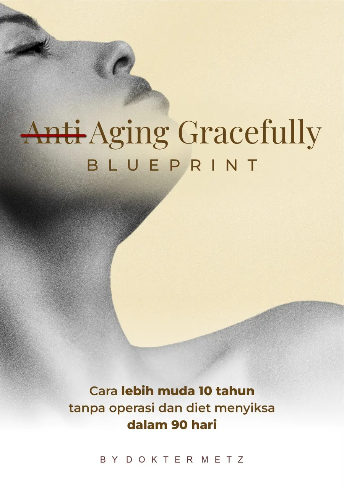
Beautycode Biohacking. Cara lebih muda 10 tahun tanpa operasi dan diet menyiksa dalam 90 hari.
Baru pertama kali? Lihat peta semua program Aging Gracefully — dari yang gratis sampai pendampingan.
📚 Mulai Dari SiniCatatan kesehatan: Isi eBook ini bersifat edukasi dan tidak menggantikan pemeriksaan, diagnosis, atau terapi dari dokter. Kuesioner tidur, puasa, suplemen, dan perawatan yang dibahas bukan resep pribadi. Jika kamu punya kondisi medis, sedang hamil/menyusui, atau rutin minum obat, konsultasikan dulu dengan dokter sebelum mengubah pola makan, olahraga, puasa, atau perawatan.
Ada masa ketika cermin seperti lawan bicara yang jujur sekaligus kejam. Perut mulai buncit, kepala penuh stresor, energi cepat habis padahal hari baru berjalan. Ironisnya, sebagai dokter dan praktisi akupunktur, saya paham sinyal-sinyal tubuh—namun sempat juga mengabaikannya. Titik balik itu membuat saya berjanji: saya harus menemukan cara yang lebih manusiawi untuk merawat diri dan mendampingi pasien.
Di perjalanan itulah saya melihat jurang yang sering dibuat-buat antara kedokteran Barat dan kedokteran Timur. Seolah dua dunia yang tak bisa berdamai, padahal keduanya menghadapi manusia yang sama—dengan biologi, emosi, dan konteks hidup yang utuh. Pengalaman klinis mengajarkan saya: bukan pilih Barat atau Timur, melainkan menyatukannya dengan bijak. Klinik memberi data dan protokol yang presisi; akupunktur dan kebijaksanaan Timur mengingatkan pada aliran energi, ritme harian, dan pemulihan alami. Ketika keduanya bersalaman, pengobatan menjadi lebih utuh—ilmiah sekaligus manusiawi.
Tahun 2016 menjadi pintu awal pencarian yang lebih serius. Saya membaca karya Manon Pilon tentang The Cure Anti-Aging—seorang praktisi anti-aging dari Kanada yang meneliti lebih dari 15 tahun pada 10.000+ pasien. Dari sana saya semakin tertarik pada pendekatan berbasis body type—bahwa setiap orang membawa “peta” bawaan: kecenderungan metabolik, respons hormon, pola stres dan pemulihan.
Selama 5+ tahun berikutnya, saya mempelajari dan menerapkan pendekatan ini secara sistematis—ribuan pasien saya analisis step-by-step, mencari benang merah yang konsisten. Hasilnya membentuk kerangka yang saya sebut Beautycode Biohacking: cara membuka “kode keindahan” tubuh secara natural, terukur, dan berkelanjutan.
Perjalanan pribadi saya menjadi bukti paling jujur. Kini, memasuki usia 40 tahun, saya justru merasa lebih bertenaga dibanding usia 25: tubuh lebih atletis, pikiran lebih tajam, dan stamina mental lebih tenang. Bukan karena jalan pintas, melainkan kebiasaan yang sederhana dan konsisten: tidur yang bermutu, nutrisi yang bersahabat dengan metabolisme, manajemen stres yang realistis, latihan kekuatan, ritme harian yang menghormati tubuh—ditopang perawatan klinis yang minimal namun tepat.
Buku ini saya tulis singkat-padat (100+ halaman) agar tidak melelahkan, namun kaya manfaat. Formatnya semi-novel: Anda akan mengikuti kisah Aruna & Raka, sehingga pembacaan terasa mengalir; di balik tiap bab, ada insight praktis—ringkas, berbasis sains, dan bisa langsung diterapkan. Saya ingin Anda tidak sekadar paham, tapi berhasil mempraktikkan.
Gracefully Aging Cara Lebih Muda 10 Tahun Tanpa Operasi dan Diet Menyiksa dalam 90 Hari adalah undangan untuk merawat diri dengan cara yang holistik, natural, dan cerdas. Bukan melawan usia, tetapi menata dan merangkulnya. Bukan memilih Barat atau Timur, tetapi mengintegrasikannya demi manusia seutuhnya.
Terima kasih telah mempercayakan perjalanan ini bersama saya. Semoga setiap halaman menuntun Anda menemukan kembali energi, ketenangan, dan pesona yang mungkin sempat hilang.
Salam hangat,
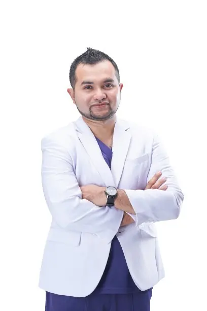
dr. metz
Your Partner in Beauty Journey
Setiap orang punya kisahnya sendiri tentang menua. Saya pun begitu. Ada masa ketika perut mulai membuncit, tubuh cepat lelah, pikiran terasa keruh, dan stres seolah tak ada ujungnya. Saat itu saya berpikir, “Apakah ini tanda-tanda tak terelakkan dari usia?”
Sebagai dokter sekaligus praktisi akupunktur, saya paham bahwa tubuh selalu memberi sinyal. Namun sering kali, kita justru abai. Kita mencari solusi instan—diet ketat, prosedur ekstrem, bahkan operasi—padahal akar masalahnya ada pada keseimbangan yang hilang.
Perjalanan saya membawa pada sebuah kesadaran: dunia medis sering memisahkan diri antara Barat dan Timur. Barat menawarkan data, teknologi, dan protokol presisi. Timur mengajarkan kebijaksanaan ritme hidup, energi, dan kealamian. Padahal, keduanya berbicara tentang manusia yang sama. Mengapa harus dipisahkan, jika keduanya bisa berpadu?
Tahun 2016 menjadi titik balik. Saya menemukan buku karya Manon Pilon, The Cure Anti-Aging. Ia meneliti lebih dari 15 tahun, dengan 10.000 pasien, hingga menemukan pola tentang bagaimana tubuh menua. Dari sana saya belajar bahwa setiap orang memiliki body type—peta bawaan tubuh yang menentukan kecenderungan metabolisme, hormon, hingga respon terhadap stres.
Sejak saat itu, saya memutuskan untuk meneliti lebih dalam. Selama lebih dari lima tahun, saya menganalisis ribuan pasien dengan teliti, langkah demi langkah. Hasilnya, saya menemukan sebuah benang merah: ada “kode keindahan” yang bisa diaktifkan ulang. Saya menyebutnya Beautycode Biohacking.
Dan yang paling membahagiakan, saya mengalaminya sendiri. Kini, di usia saya yang menginjak 40 tahun, saya justru merasa lebih bertenaga dibanding saat berusia 25. Tubuh lebih atletis, pikiran lebih tajam, dan energi lebih stabil.
Buku ini adalah cermin dari perjalanan itu. Ditulis dalam format semi-novel agar mudah diikuti, setiap bab mengalir melalui kisah Aruna dan Raka—sepasang manusia biasa yang belajar menghadapi penuaan. Di balik cerita, ada catatan biohacker yang merangkum insight ilmiah dan langkah praktis. Tidak panjang, hanya seratus halaman lebih, tapi cukup untuk menjadi teman perjalanan Anda.
Selamat datang di Gracefully Aging: Beautycode Biohacking.
Semoga setiap halaman membantu Anda menemukan cara menua dengan elegan—bukan melawan usia, melainkan merangkulnya dengan bijak.
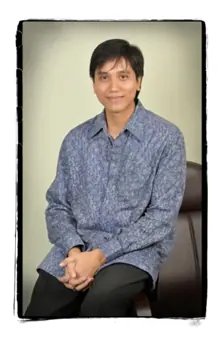
“Menurut saya, buku ini luar biasa. Cara penyampaiannya dibuat dalam bentuk narasi yang detail, mirip sebuah novel ringkas. Isinya berisi tips-tips umum, namun juga ada beberapa hal yang disampaikan secara lebih mendalam dan terasa sangat personal. Rasanya buku ini benar-benar cocok untuk kita.
Dampaknya pun besar, karena apa yang dituliskan di dalam buku—baik tips yang sifatnya umum maupun hal-hal yang lebih personal—ternyata banyak yang sudah saya jalani secara pribadi. Hasilnya bisa terlihat, di usia saya yang sudah 56 tahun, saya masih bisa tampil segar dan sehat.”
— Muhammad GunawanYasni, SE.Ak., MM, CIFA, FIIS, CRP, CA (anggota Dewan Syariah Nasional – Majelis Ulama Indonesia (MUI))
“Menjadi tua itu pasti, tetapi merasa tua adalah pilihan.”
— C.S. Lewis
“Wajahku terlihat tua tidak ya?”
Aruna terbangun lebih pagi dari biasanya. Suara alarm belum berbunyi, tetapi matanya sudah terbuka. Ia berbaring sejenak, menatap langit-langit kamar yang dihiasi bayangan samar sinar matahari pagi menembus gorden. Ada rasa enggan untuk bangun, tubuhnya masih berat meski semalam ia tidak tidur larut.
Dengan perlahan, ia bangkit dan berjalan menuju cermin besar di sudut kamar. Cahaya lembut yang masuk dari jendela membuat wajahnya terlihat jelas. Ia menatap pantulan dirinya—dan untuk pertama kalinya, ia benar-benar menyadari sesuatu yang selama ini ia coba abaikan.
Ada garis halus di sudut matanya. Pipinya tidak sekencang dulu. Kulit wajahnya tampak kusam, tidak bercahaya seperti dulu ketika usia masih di akhir 20-an. Ia meraih botol kecil berisi krim malam yang mahal—produk yang direkomendasikan influencer kecantikan yang ia ikuti di media sosial. Dengan gerakan otomatis, ia mengoleskan krim itu sambil berharap perubahan instan. Namun, bayangan kusam itu tetap ada.
Aruna menghela napas panjang. “Apa aku mulai tua? Kenapa aku merasa wajahku tak lagi sama?” pikirnya.
Di saat yang hampir bersamaan, Raka—suaminya—baru saja keluar dari kamar mandi. Rambutnya yang mulai memutih di sisi pelipis dibiarkan acak. Ia menepuk-nepuk punggungnya, berusaha meredakan rasa kaku yang akhir-akhir ini semakin sering datang. Raka menguap panjang, lalu melihat ke arah Aruna yang masih berdiri di depan cermin.
“Kamu belum siap-siap, Na?” tanyanya sambil memegang pinggangnya. “Punggungku sakit lagi pagi ini. Rasanya makin parah.”
Aruna menoleh sebentar, lalu kembali menatap cermin. Ia ingin mengatakan sesuatu, tetapi menahan diri. Dalam hatinya, ia kesal. “Dia bahkan tidak menyadari wajahku berubah. Selalu tentang dia dan rasa sakitnya.”
Raka duduk di tepi ranjang, tangannya meraba perut yang kini lebih menonjol daripada beberapa tahun lalu. “Kenapa perutku nggak bisa rata lagi ya, padahal aku sudah sering skip makan malam?” keluhnya.
Aruna mendengar keluhan itu, tetapi bukannya merasa empati, ia justru merasa semakin jauh. “Kamu sering pulang malam, makan mie instan larut, lalu bilang skip makan malam? Itu kan sama saja,” ujarnya ketus.
Raka terdiam. Nada Aruna membuatnya tersinggung. Ia merasa usahanya menjaga tubuh tidak dihargai. Ia ingin membalas, tetapi memilih menahan kata-katanya.
Keheningan mengisi kamar.
Keduanya sama-sama tenggelam dalam pikiran masing-masing. Aruna merasa sendirian menghadapi perubahan tubuhnya. Raka merasa lelah dengan tuntutan yang terus-menerus datang, baik dari pekerjaan maupun rumah.
Yang ironis, keduanya sering mencari pelarian di media sosial. Aruna sering membandingkan dirinya dengan teman-teman sebayanya yang tampak selalu glowing. Raka, di sisi lain, melihat teman-teman lamanya di grup kampus yang masih bugar, bisa lari marathon, atau tampil gagah dengan tubuh proporsional.
Perasaan tidak cukup itu semakin menekan.
Aruna menutup botol krim dan menepuk wajahnya perlahan. “Aku capek, Rak. Bukan cuma capek fisik, tapi semuanya terasa berat.”
Raka menoleh, menatap wajah istrinya yang kini terlihat serius. Ia ingin berkata sesuatu yang menenangkan, tetapi rasa sakit di punggungnya dan letih yang menumpuk membuat ia hanya bisa mengangguk pelan.
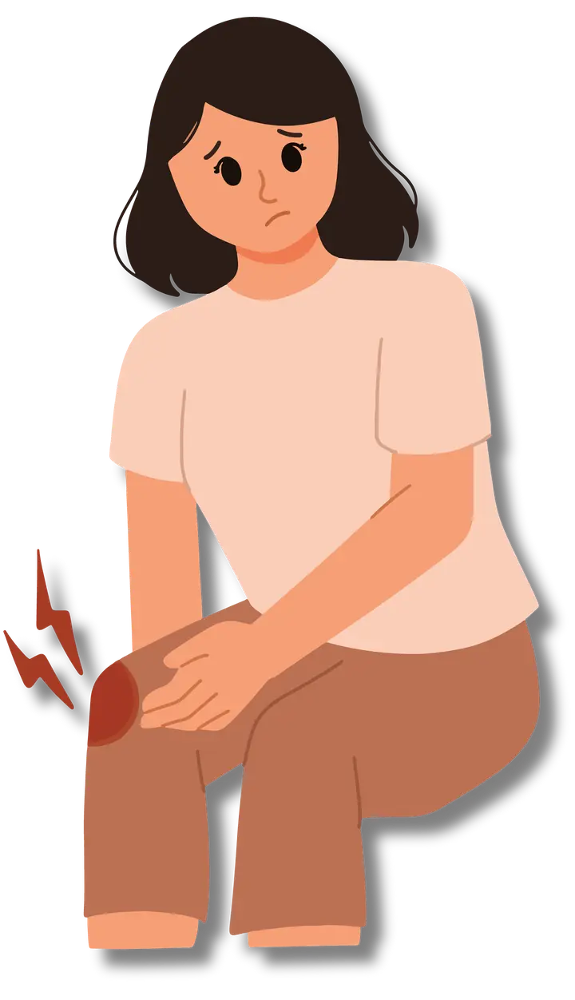
Aruna menatap cermin di kamar dengan wajah lelah. Malam sebelumnya, ia hanya tidur empat jam karena lembur. Raka, suaminya, bahkan lebih buruk: tidur pukul 01.00 setelah menyelesaikan laporan, lalu bangun pukul 06.00 dengan punggung kaku.
Pagi itu, keduanya merasa tubuh berat, emosi pendek, dan pikiran kabur. Seolah usia mereka bertambah lima tahun hanya dalam semalam.
Mereka belum sadar bahwa kurang tidur adalah jalan tercepat menuju penuaan dini.
Tidur bukan sekadar “beristirahat”. Tidur adalah laboratorium regenerasi alami tubuh. Tanpa tidur, semua strategi biohacking lain akan sia-sia. Nutrisi, olahraga, bahkan perawatan kulit tidak akan optimal bila tubuh tidak diberi kesempatan reset setiap malam.
Menurut Dr. Michael Breus, The Sleep Doctor, tidur adalah fondasi dari empat pilar kesehatan: tidur, nutrisi, aktivitas fisik, dan manajemen stres. Jika tidur terganggu, tiga pilar lain akan runtuh.
Tidur bukan sekadar waktu tubuh beristirahat, melainkan proses yang penuh tahapan penting. Di dalamnya terdapat dua siklus utama yang saling melengkapi: NREM (Non-Rapid Eye Movement) dan REM (Rapid Eye Movement). Pada fase NREM, tubuh berada dalam kondisi tenang dan pemulihan mendalam.
Di tahap inilah sel-sel diperbaiki, sistem imun diperkuat, serta metabolisme distabilkan. Fase ini ibarat bengkel tubuh yang bekerja diam-diam memperbaiki kerusakan dan mengisi ulang energi. Setelah itu, tidur berlanjut ke fase REM, di mana otak justru menjadi lebih aktif. Pada tahap ini, memori diproses, emosi diatur ulang, dan kreativitas ditingkatkan.
REM bisa dianalogikan seperti “ruang kontrol” otak yang menata ulang semua informasi dan perasaan yang kita alami sepanjang hari. Kedua fase ini bergantian sepanjang malam, membentuk siklus yang sempurna.
Jika salah satunya terganggu, tubuh tidak mendapatkan perbaikan optimal, dan pikiran pun mudah kacau. Karena itu, menjaga kualitas tidur sama artinya dengan memberi tubuh dan otak kesempatan melakukan servis rutin yang esensial bagi kesehatan jangka panjang dan proses menua yang anggun.
Jika siklus ini terpotong (misalnya tidur hanya 4–5 jam), tubuh tidak sempat “healing” dan otak tidak sempat “reset”. Akibatnya: wajah kusam, mudah sakit, emosi meledak.
Aruna dan Raka adalah contoh nyata. Mereka bukan sekadar kurang istirahat, tapi sudah memasuki lingkaran penuaan dipercepat: stres → kurang tidur → hormon kacau → tubuh makin menua → stres bertambah.
Tidur berkualitas bukan datang dengan sendirinya, melainkan hasil dari kebiasaan yang konsisten. Langkah pertama adalah Ritual Sleep Hygiene. Matikan gadget setidaknya satu jam sebelum tidur agar otak tidak terus terpapar cahaya biru yang mengganggu produksi melatonin. Ciptakan suasana kamar yang tenang dengan lampu redup atau cahaya hangat, lalu biasakan tidur dan bangun di jam yang sama setiap hari, termasuk akhir pekan, agar ritme sirkadian tubuh terjaga stabil.
Langkah kedua adalah menjaga Nutrisi dan Hormon Balance. Hindari kafein dan alkohol setelah pukul tiga sore, karena keduanya dapat mengacaukan fase tidur dalam. Sebaliknya, konsumsi makanan yang mendukung kualitas tidur, seperti sayuran hijau dan almond yang kaya magnesium, atau pisang dan susu hangat yang mengandung triptofan. Pola ini bukan hanya membantu tidur lebih nyenyak, tetapi juga menstabilkan hormon penting seperti insulin, kortisol, testosteron, dan estrogen.
Langkah ketiga adalah Mind & Body Reset. Sebelum tidur, lakukan latihan pernapasan 5–5 (tarik napas lima detik, buang napas lima detik) selama lima menit untuk menenangkan sistem saraf. Lengkapi dengan gratitude journaling sederhana dengan menulis tiga hal yang disyukuri, sehingga pikiran lebih ringan dan hati lebih tenang. Tambahkan peregangan ringan untuk melepaskan ketegangan otot, membuat tubuh lebih rileks.
Menurut pakar tidur Michael Breus, setiap orang juga memiliki chronotype atau tipe biologis tidur — singa, beruang, serigala, atau lumba-lumba.
Mengenali chronotype membantu menentukan jam tidur terbaik dan waktu paling produktif di siang hari. Dengan memadukan tiga pilar ini, tidur bukan lagi sekadar istirahat, melainkan strategi biohacking yang efektif untuk regenerasi tubuh, kestabilan emosi, dan proses menua yang lebih elegan.
Seorang wanita 41 tahun datang ke klinik dengan keluhan kulit kusam, cepat lelah, dan berat badan naik. Ia sudah mencoba skincare mahal dan diet, tapi gagal.
Setelah digali, ternyata ia tidur hanya 5 jam per malam. Setelah program perbaikan tidur sederhana: tidur jam 22.30, gadget off 1 jam sebelum tidur, latihan napas sebelum tidur → dalam 6 minggu:
Sering kali kunci peremajaan bukan dari luar (krim/operasi), melainkan dari dalam—tidur.
Instruksi: Skala 0–3
(0 = Tidak Pernah · 1 = Jarang · 2 = Sering · 3 = Hampir Setiap Hari)
Karena tidur = pondasi semua biohacking.
Analoginya sederhana:
Tidur adalah charger tubuh. Bayangkan ponsel canggih dengan aplikasi premium, tapi baterainya kosong. Tidak berguna. Begitu pula tubuh tanpa tidur.
Aruna dan Raka akhirnya mulai mengubah kebiasaan kecil. Gadget dimatikan lebih awal, lampu kamar diganti lampu hangat, dan mereka berkomitmen tidur sebelum pukul 22.30.
Hasilnya tidak instan, tetapi dalam beberapa minggu mereka mulai merasakan perbedaan. Wajah lebih segar, energi lebih stabil, pertengkaran lebih jarang. Mereka menyadari bahwa tidur bukan kemewahan, melainkan kebutuhan dasar untuk bisa aging gracefully.
Jika Anda ingin memulai perjalanan biohacking, mulailah dari tidur. Ini adalah pilar pertama, fondasi dari segala transformasi.
Untuk pembaca yang ingin belajar lebih jauh, saya rekomendasikan karya Dr. Michael Breus – The Power of When dan risetnya tentang chronotype. Buku ini akan membantu Anda menemukan ritme biologis terbaik untuk tidur, makan, dan bekerja sesuai “jam tubuh” masing-masing.
“You can’t do a good job if your job is all you do.”
— Katie Thurmes
Pagi itu matahari Jakarta baru saja naik, cahayanya menerobos tirai tipis ruang makan. Dapur rumah Aruna dipenuhi aroma roti panggang dan teh melati, tapi suasana tidak seramah harumnya. Aruna berdiri sambil merapikan rambut dengan terburu-buru, berusaha menutupi lingkar hitam yang makin pekat di bawah matanya. Malam sebelumnya ia hanya tidur empat jam, resah dengan pikiran yang berputar tanpa henti.
Raka duduk di meja makan dengan kemeja biru muda yang sudah disetrika rapi. Tangannya sibuk mengetik di ponsel, jemari cepat menari, wajah tegang. Notifikasi grup kerja berdentang tanpa henti.
“Roti sudah aku siapkan. Bisa nggak, sekali aja, kita sarapan bareng tanpa HP?” suara Aruna lirih, tapi sarat nada kesal.
“Sebentar, Na. Klien nunggu laporan,” jawab Raka tanpa mengangkat kepala.
Aruna meletakkan cangkir teh dengan hentakan kecil. Bunyi sendok beradu dengan porselen menembus keheningan.
“Urgent terus. Apa kamu sadar, bahkan di meja sarapan pun aku seakan nggak ada?”
Raka menurunkan ponsel, menghela napas panjang. “Na, aku ini kerja buat kita. Kamu pikir gampang? Kantor penuh tekanan, aku harus selalu siap. Kenapa kamu nggak bisa ngerti?”
Aruna menatapnya tajam, matanya berkilat. “Aku ngerti kamu kerja keras. Tapi aku juga capek, Rak. Capek bangun tiap pagi dengan badan lelah, wajah kusam, hati kosong. Aku butuh kamu hadir, bukan cuma fisik duduk di sini.”
Suasana makin panas. Raka meremas sendok, suaranya meninggi. “Aku pun capek, Na. Punggung ini sakit, perut makin maju, energi habis sebelum siang. Aku merasa tua sebelum waktunya. Apa kamu kira aku nggak sadar?”
Aruna menggigit bibir. Ingatannya terbang ke masa awal pernikahan. Mereka dulu punya kebiasaan kecil: sarapan sambil bercanda tentang mimpi aneh malam sebelumnya. Bahkan roti gosong pun jadi bahan tawa. Sekarang? Roti itu sama, tapi canda lenyap, diganti dingin dan jarak.
Aira, anak mereka yang berusia 10 tahun, duduk di ujung meja. Wajah mungilnya tertunduk. Ia menyobek roti kecil-kecil, tidak dimakan. Suasana tegang menekannya. Dalam hati ia bertanya, “Kenapa Ayah dan Ibu sering marah-marah? Bukankah sarapan harusnya menyenangkan?”
Aruna akhirnya pecah. “Dulu kamu nggak seperti ini, Rak. Kamu hangat, sabar, penuh energi. Sekarang cepat marah, bahkan ke anak. Kita berubah jadi orang asing di rumah sendiri.”
Hening panjang. Hanya terdengar detak jam dinding, menghitung jarak di antara mereka.
Aira menaruh rotinya, beranjak meninggalkan meja. Tanpa berkata apa-apa, ia masuk ke kamar, menyisakan kesunyian yang menusuk.
Aruna menatap cangkir tehnya yang sudah dingin, perasaan hampa. Raka menatap keluar jendela, menahan gejolak di dadanya. Dalam hati, mereka sama-sama sadar: ini bukan sekadar soal sarapan. Ini soal energi yang hilang, tidur yang kacau, tubuh yang menua lebih cepat, dan cinta yang perlahan tergerus.
Aruna duduk termenung. Ia teringat malam-malam gelisah, terbangun jam dua dini hari, pikiran berlari ke mana-mana: pekerjaan rumah, kesehatan, anak, masa depan. Ia tahu tidur yang buruk membuat wajahnya kusam, kulit kering, mood meledak-ledak. Tapi ia tak tahu harus mulai dari mana untuk memperbaikinya.
Raka di sisi lain merasa tubuhnya berkhianat. Perutnya makin menonjol meski porsi makan tidak berlebihan. Ia cepat lelah, bahkan menuruni tangga kantor membuat lututnya nyeri. Ia sadar, stres pekerjaan dan kurang tidur membuat tubuhnya kacau. Tapi gengsi membuatnya jarang mengaku.
Mereka berdua merasa terjebak dalam tubuh yang makin menua, seakan kehilangan kendali.
Dulu, saat baru menikah, Aruna sering menyiapkan sarapan sederhana: nasi goreng dengan potongan cabai rawit kecil yang sering bikin Raka kepedasan. Mereka tertawa setiap kali itu terjadi. Bahkan saat ekonomi sulit, sarapan dengan tempe goreng pun jadi momen hangat.
Kini, meja itu sama. Piring yang sama, kursi yang sama. Tapi atmosfer berubah. Kelelahan fisik dan mental membuat meja sarapan menjadi medan perang.
Matahari kian meninggi, menerangi meja yang ditinggalkan Aira. Aruna masih diam, Raka menunduk. Tidak ada pemenang dari pertengkaran itu. Hanya rasa lelah, berselimut kesadaran bahwa mereka butuh lebih dari sekadar kata maaf.
Mereka butuh perubahan. Bukan hanya pada cara bicara, tapi pada energi tubuh, kualitas tidur, nutrisi, dan hormon yang mengatur segalanya.
Pertengkaran di meja sarapan itu adalah alarm—panggilan untuk berhenti hidup autopilot, dan mulai mencari cara baru untuk hidup sehat, bertenaga, dan tetap saling terhubung.
Dan tanpa mereka sadari, konflik kecil itu akan menjadi pintu pertama menuju perjalanan transformasi.
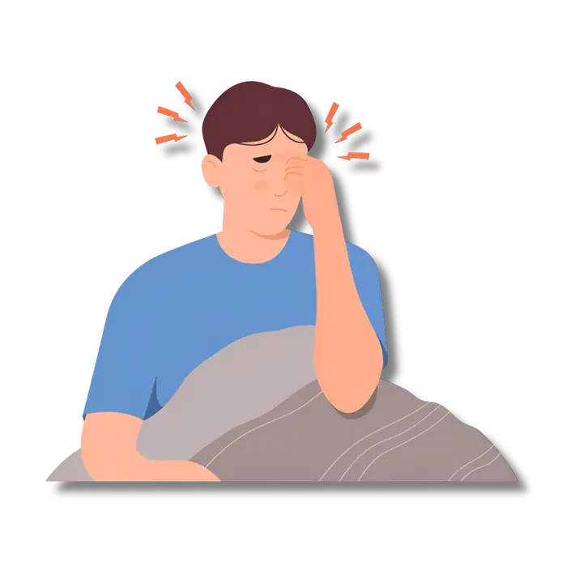
Pernahkah Anda merasa pagi hari sudah dimulai dengan pertengkaran kecil, padahal tidak ada alasan besar yang memicunya?
Sering kali masalah itu bukan pada topik obrolan, tetapi pada kondisi tubuh dan pikiran yang sedang kacau. Pada kasus Aruna dan Raka, meja sarapan menjadi saksi betapa tubuh yang lelah dan hormon yang tidak seimbang bisa mengubah momen seharusnya hangat menjadi ajang adu emosi.
Mari kita bongkar apa yang sebenarnya terjadi di balik layar tubuh mereka.
Setiap pagi, tubuh manusia memiliki alarm alami berupa hormon kortisol. Normalnya, kortisol memang naik di pagi hari untuk membantu kita segar bangun tidur, lalu menurun perlahan hingga malam tiba. Namun, ketika tidur kacau, stres tinggi, dan tubuh kelelahan, pola ini rusak. Kortisol yang seharusnya turun di siang menjelang sore justru tetap tinggi sepanjang hari.
Inilah yang dialami Raka. Saat Aruna mencoba mengajaknya berbicara, tubuhnya sudah penuh dengan kortisol sejak membuka mata. Bagi otak, kondisi ini berarti mode bertahan hidup: fight or flight. Maka tidak heran, kata-kata kecil dari istrinya langsung ditanggapi dengan defensif, bahkan meledak. Bukan karena ia tidak mencintai Aruna, tetapi karena sistem sarafnya sedang dibanjiri sinyal darurat.
Aruna pun tidak kalah terjebak dalam pusaran kortisol. Tidur yang buruk membuat tubuhnya seolah tidak sempat menekan tombol reset. Akibatnya, ia lebih mudah menangis, mudah tersinggung, dan merasa kosong. Ketika dua orang yang sama-sama kelelahan duduk berhadapan di meja makan, hasilnya bisa ditebak: percakapan sederhana berubah menjadi ledakan emosi.
Keseimbangan kortisol sangat dipengaruhi oleh hormon lain, yaitu melatonin. Hormon ini diproduksi saat malam hari dalam kondisi gelap. Ia bertugas menenangkan tubuh, membantu otak masuk ke fase tidur dalam, serta memulihkan sel-sel yang rusak.
Namun, cahaya biru dari layar ponsel, stres pekerjaan yang berlarut, dan kebiasaan tidur larut malam membuat produksi melatonin tertekan. Akibatnya, tubuh tidak benar-benar masuk ke fase deep sleep yang krusial untuk regenerasi. Inilah yang dialami Aruna. Wajahnya kusam, lingkar hitam makin jelas, dan kulit kering—semua tanda klasik dari kurangnya melatonin.
Ketika melatonin rendah, bukan hanya kualitas tidur yang menurun, tetapi juga mood. Aruna menjadi lebih mudah menangis, mudah cemas, dan kehilangan semangat untuk memulai hari. Ironisnya, melatonin yang rendah justru membuat kortisol makin sulit dikendalikan. Maka lingkaran setan pun terbentuk: tidur buruk → melatonin rendah → kortisol tinggi → tidur makin kacau.
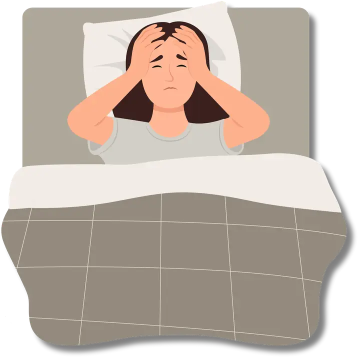
Sementara itu, pada Raka, masalah lain muncul. Testosteron—hormon vitalitas pria—sebenarnya diproduksi paling optimal saat tidur nyenyak, terutama di fase deep sleep. Namun karena tidurnya berantakan, kadar testosteron turun signifikan. Studi bahkan menunjukkan bahwa tidur kurang dari enam jam saja bisa menurunkan testosteron hingga 10–15% dalam semalam.
Bagi Raka, ini berarti energi cepat habis, perut makin buncit, dan semangat kerja menurun. Lebih parah lagi, testosteron rendah membuatnya gampang frustrasi dan kehilangan gairah. Ia merasa tubuhnya bukan lagi tubuh yang dulu, seolah vitalitasnya dicuri perlahan. Maka, ketika Aruna menyinggung perubahan dirinya, kalimat itu terasa seperti luka yang dibuka kembali.
Di sisi lain, Aruna menghadapi pergulatan hormonal khas perempuan. Estrogen adalah hormon yang menjaga elastisitas kulit dan kestabilan mood. Progesteron memberi efek menenangkan, layaknya obat penenang alami. Namun, tidur yang buruk dan stres kronis menekan keduanya.
Akibatnya, Aruna mengalami mood swing, cepat marah lalu cepat menangis. Ia merasakan kulitnya kusam, rambut lebih rontok, dan energi tak pernah penuh. Semua itu memperkuat rasa tidak percaya diri. Maka, kritik sekecil apa pun dari Raka terasa menghujam lebih dalam, seolah membenarkan kekhawatirannya bahwa ia memang “tak secantik dulu.”
Di tengah badai hormon yang kacau, ada satu hormon yang seharusnya bisa menyelamatkan hubungan: oksitosin. Disebut juga hormon cinta, oksitosin dilepaskan saat kita saling menyentuh, berpelukan, tersenyum, atau sekadar makan bersama dengan penuh kehangatan. Oksitosin bekerja menurunkan kortisol, meningkatkan rasa aman, dan memperkuat ikatan emosional.
Namun, pertengkaran pagi itu justru memutus aliran oksitosin. Tatapan mata yang biasanya hangat kini penuh amarah. Sentuhan tangan yang dulu menenangkan kini digantikan oleh jarak. Tanpa oksitosin, hubungan mereka terasa renggang, meski fisiknya hanya berjarak satu meja.
Dari semua cerita ini, kita bisa melihat pola besar: tidur buruk, stres tinggi, dan nutrisi yang tidak seimbang semuanya bermuara pada satu hal—hormon. Seolah-olah hormon adalah remote control yang menentukan apakah kita merasa bahagia atau hancur, penuh energi atau lelah, hangat atau mudah marah.
Aruna dan Raka hanyalah cerminan banyak pasangan di luar sana. Mereka tidak sengaja “bermusuhan” setiap pagi, tapi hormon yang kacau membuat mereka tidak punya kendali penuh atas emosi. Inilah sebabnya biohacking modern selalu menempatkan hormonal reset sebagai pintu masuk utama.
Hormonal reset bukanlah hal yang instan, tetapi bisa dimulai dari kebiasaan kecil. Setiap menit tambahan tidur, setiap pelukan yang tulus, setiap sarapan sehat tanpa gadget, semuanya adalah biohack yang mengembalikan kendali hormon ke jalur seimbang.
Aruna dan Raka sedang belajar bahwa pertengkaran di meja sarapan bukan sekadar masalah komunikasi, melainkan tanda bahwa tubuh mereka sedang berteriak minta perhatian. Dengan memperbaiki tidur dan menyeimbangkan hormon, mereka tidak hanya menyelamatkan kesehatan, tetapi juga hubungan dan masa depan bersama.
Dan dari sinilah perjalanan Gracefully Aging dimulai: memahami bahwa untuk tampak lebih muda, penuh energi, dan harmonis, kuncinya ada pada hormon—sang master key kehidupan.
“Tak lagi sama, dan itu menakutkan.”
— unknown
Mobil melaju perlahan meninggalkan hiruk-pikuk Jakarta sore itu. Aruna duduk di kursi penumpang sambil sesekali memeriksa riasannya di kaca. Ia merasa kulit wajahnya tampak kusam, membuat kegelisahannya kian bertambah. Di belakang kemudi, Raka menarik napas panjang. Ia mengenakan kemeja batik yang agak ketat di bagian perut. Sejak tadi, ia berusaha duduk tegak agar perutnya tidak terlalu menonjol. Mereka sedang dalam perjalanan menuju reuni kampus, dan kegugupan halus menyelimuti keduanya.
Di acara reuni, aula sudah ramai oleh suara tawa dan musik tahun 2000-an. Begitu memasuki ruangan, Aruna dan Raka disambut beberapa teman lama. Seorang kawan lama bernama Budi menyapa mereka dengan hangat. Budi yang dulu bertubuh subur kini tampak jauh lebih ramping berkat rutin lari pagi. Melihat itu, Raka tersenyum canggung sambil berusaha menutupi perutnya yang membuncit.
Tak jauh dari sana, Aruna tengah berbincang dengan Sinta dan Dewi, dua sahabat semasa kuliah. Mereka tampak nyaris tak berubah — masih bugar dan awet muda di usia mereka sekarang. Teman-temannya bahkan sempat memuji Aruna masih secantik dulu. Namun Aruna justru menangkap kerutan halus di sudut matanya saat mereka berfoto bersama. Ia membandingkan dirinya dengan teman-temannya dan merasa wajahnya lebih kusam dan lelah dibanding mereka, membuatnya merasa minder.
Beberapa jam berlalu, reuni dipenuhi nostalgia dan canda tawa. Hanya saja, Aruna dan Raka malam itu tak sepenuhnya menikmati. Setiap kali ada kamera mengarah untuk foto bersama, Raka cenderung berdiri di belakang orang lain, berusaha menyembunyikan perut buncitnya. Aruna pun lebih banyak diam, sesekali merapikan rambut untuk menutupi garis-garis halus di wajah. Dalam hati, mereka berdua berharap acara segera selesai.
Di perjalanan pulang, suasana di dalam mobil hening. Aruna menyandarkan kepala ke jendela, perlahan menghapus sisa riasan di wajahnya dengan tisu basah. Raka fokus menyetir, tapi pikirannya masih tertinggal di acara tadi. Gurauan teman-teman seputar perubahan fisik mereka terngiang kembali.
Tanpa menoleh, Aruna membuka percakapan. “Tadi seru ya… Semua orang kelihatan sehat dan bugar,” ujarnya datar, memecah keheningan. Raka melirik sekilas ke arah Aruna. “Iya, lumayan,” jawabnya singkat.
Aruna menatap lurus ke depan. “Lihat si Budi, rajin lari hasilnya bagus, ya. Perutnya sekarang rata,” katanya, berusaha terdengar biasa saja.
Raka tahu ke mana arah pembicaraan ini. “Hmm, iya,” gumamnya. “Kamu juga lihat Sinta? Wajahnya glowing banget. Pasti dia rutin perawatan,” balasnya sambil terus menatap jalan. Aruna mengerutkan kening mendengar nada Raka. “Maksud kamu, wajahku nggak glowing?” tanyanya, menoleh menatap suaminya.
Raka menghela napas. “Bukan begitu. Cuma ya… mereka kelihatan lebih jaga diri aja,” ucapnya pelan.
“Kamu mau bilang aku nggak jaga diri, gitu?” Aruna menukas cepat, suaranya meninggi.
Raka meremas setir lebih erat. “Kamu yang mulai. Tadi ngomong perut segala,” balasnya terdengar defensif.
Aruna mendengus kecil. “Kan aku cuma bilang kenyataan. Perutmu memang… ya sudahlah.” Ia memalingkan wajah, kembali menatap keluar jendela dengan kesal.
Setelah itu hening. Ketegangan memenuhi mobil, menyesakkan meski tak ada kata-kata. Sisa perjalanan dilalui dalam kebisuan dingin. Tak lama, mereka tiba di rumah dan langsung bersiap tidur tanpa banyak bicara.
Malam itu, keduanya berbaring di ranjang yang sama namun dengan punggung berbalik arah. Mata Aruna terbuka menatap dinding gelap; pikirannya penuh oleh berbagai adegan dan ucapan pedas malam ini. Di sisi lain, Raka menatap langit-langit kamar dengan perasaan bersalah sekaligus terluka. Ada jarak menganga di antara mereka, lebih dari sekadar ruang di atas kasur.
Beberapa menit berlalu dalam sunyi, hingga akhirnya Aruna tak mampu lagi menahan gejolak di dadanya. “Ka…,” panggilnya pelan nyaris berbisik.
Raka terhenyak dari lamunan. “Apa?” sahutnya singkat tanpa bergerak.
Aruna menggigit bibir, mengumpulkan keberanian. “Kamu ngerasa nggak sih… kita ini beda banget dari dulu?” tanyanya lirih, masih membelakangi Raka.
Raka mengernyit walau Aruna tak melihatnya. “Beda gimana?” ia balik bertanya.
Perlahan Aruna berbalik menghadap Raka. Terlihat matanya sudah berkaca-kaca. “Dulu… kamu romantis, Ka,” ucapnya, suaranya bergetar. “Kamu selalu bisa bikin aku ketawa, bikin aku merasa cantik. Sekarang… sekarang kamu bahkan liat aku aja jarang.” Kalimat terakhir terdengar getir.
Raka tertegun, hatinya mencelos mendengar ungkapan Aruna. Ia bangun bersandar di kepala tempat tidur, menatap Aruna dengan perasaan bersalah. “Maksud kamu apa? Aku selalu lihat kamu kok setiap hari,” elaknya, meski paham maksud sebenarnya.
Aruna mengusap sudut matanya yang basah. “Kamu tau maksudku, Ra...” katanya pelan. “Kamu nggak pernah muji aku lagi. Nggak pernah bilang sayang kecuali aku yang tanya duluan. Kamu… kamu udah nggak romantis kayak dulu.” Suaranya pecah dan air mata mulai menetes di pipinya.
Raka menatap istrinya, merasa tersudut oleh kebenaran ucapan itu. Ia berusaha membela diri. “Romantis... Kamu tahu sendiri kerjaanku gimana. Pulang malam aku capek. Mana sempat mikirin hal begitu tiap hari?” ujarnya dengan suara bergetar menahan emosi. “Lagi pula, kamu juga berubah. Kamu bukan Aruna yang ceria waktu kuliah dulu. Sekarang, setiap hari yang keluar dari mulutmu keluhan. Apa saja kamu keluhkan. Gimana aku mau romantis kalau suasananya begitu terus?” Ucapan Raka meluncur tajam sebelum ia sempat berpikir panjang.
Aruna membelalakkan mata, terkejut sekaligus terluka mendengar itu. “Jadi itu yang kamu rasain? Aku bikin suasana jelek di rumah, gitu?” cetusnya dengan suara bergetar menahan tangis. “Kamu pikir aku senang ngeluh? Aku capek, Ka….” Tanpa bisa dibendung lagi, isak tangis pecah dari bibir Aruna. “Aku capek merasa makin tua, stres ngurus kerjaan dan rumah, sedih karena ngerasa kamu nggak peduli… Semua kupendam. Dan kalaupun aku ngeluh, itu karena aku butuh kamu ngertiin aku!” serunya sambil terisak.
Melihat Aruna menangis tersedu-sedu, amarah Raka surut seketika, digantikan kepanikan dan rasa bersalah. Ia segera mendekat dan merengkuh Aruna. “Sayang… maaf...,” ucapnya lirih, suaranya ikut bergetar. Raka menatap wajah Aruna yang basah air mata, kemudian melanjutkan dengan pelan, “Aku juga capek... Aku juga stres. Setiap hari rasanya badan ini tambah berat, perut makin buncit, tenaga berkurang. Kadang aku takut… takut kamu nggak tertarik lagi sama aku.” Suara Raka parau saat mengucapkan kekhawatiran yang selama ini dipendamnya. Ia menunduk, tak berani menatap Aruna, malu telah mengakui kelemahannya.
Aruna terpaku mendengar pengakuan jujur suaminya. Perlahan ia menggenggam tangan Raka yang masih memegang bahunya. “Kamu... takut aku nggak tertarik lagi?” bisiknya lirih. “Padahal aku yang khawatir kamu menyesal nikah sama aku, karena… aku makin tua.” Ia menyeka air matanya dan menatap Raka nanar.
Mata Raka membesar. “Jadi selama ini kamu juga… merasa begitu?” tanyanya terkejut. Aruna mengangguk. “Iya. Aku takut kamu nggak cinta lagi sama aku karena penampilanku berubah. Takut kesehatanku menurun terus kamu terbebani. Takut… kita jadi tua dan kamu bosan sama aku.”
Raka menghela napas panjang lalu mengangguk pelan. “Aku pun merasakan hal yang sama,” ujarnya serak. “Aku takut kita menua dan saling nggak suka lagi. Takut salah satu dari kita sakit-sakitan. Takut kita jadi tua dalam diam, sibuk dengan urusan masing-masing dan lupa caranya bahagia bareng.” Kalimat terakhir Raka meluncur nyaris berbisik, air mata menggenang di pelupuk matanya.
Tanpa berkata-kata lagi, Aruna langsung memeluk Raka erat. Tangisnya kembali pecah, tapi kali ini disertai kelegaan. “Aku juga takut semua itu, Ka...,” isaknya di dada Raka. “Aku kira cuma aku sendiri yang ngerasain.” Raka membalas pelukan Aruna dengan erat. “Kamu nggak sendiri, Sayang... kita hadapi sama-sama, ya,” bisiknya menenangkan.
Entah berapa lama mereka berpelukan dalam tangis yang perlahan mereda. Dada mereka terasa sedikit lebih ringan setelah saling mengakui ketakutan terdalam. Raka mengelus punggung Aruna lembut. “Maafin aku ya, sudah nyakitin kamu tadi,” ujarnya penuh penyesalan.
Aruna menggeleng dalam pelukan suaminya. “Aku juga minta maaf... aku nggak seharusnya nyinggung kamu soal penampilan,” balasnya lirih. Mereka melepaskan pelukan perlahan. Raka mengecup kening Aruna hangat, sementara Aruna memejamkan mata menerima kasih sayang yang sempat hilang malam itu.
Setelah emosi mereda, mereka duduk bersandar di kepala tempat tidur, tangan saling menggenggam. Mata Aruna sembab, tetapi sorot matanya kini lebih tenang. “Kita nggak boleh terus begini, Ka,” gumamnya, memecah keheningan.
Raka menoleh, menatap wajah istrinya yang masih amat ia cintai. “Maksudmu?” tanyanya lembut.
“Saling memendam ketakutan sendiri. Kita harus hadapi proses menua ini sama-sama. Aku nggak mau terus merasa sendirian dan takut seperti ini,” ujar Aruna pelan.
Raka mengangguk setuju. “Kamu benar. Kita perlu lebih terbuka satu sama lain,” katanya.
Aruna menatap Raka sambil tersenyum tipis. “Iya… janji ya, kita nggak akan pendam sendiri lagi. Sekecil apa pun khawatirnya, kita ceritakan. Biar kita bisa hadapi bersama.”
Raka balas tersenyum, menggenggam tangan Aruna lebih erat. “Janji. Kita hadapi bersama,” ujarnya mantap.
Malam itu mereka tidur dengan perasaan lebih lega, meski bayang-bayang kekhawatiran usia dan kesehatan belum sepenuhnya hilang. Setidaknya kini mereka sadar masih saling peduli dan bertekad menghadapi proses penuaan ini bersama-sama, alih-alih membiarkan rasa takut menguasai hidup mereka.
Aruna menatap layar laptopnya larut malam. Cahaya biru dari layar memantul di wajah yang lelah. Ia baru saja bertengkar dengan Raka, dan hatinya terasa hampa. Ketika ia melihat pantulan wajahnya di layar, ia hampir tak mengenali dirinya sendiri: kulit kusam, mata sayu, garis halus di sudut mata.
“Kenapa aku terasa lebih tua dari umurku?” bisiknya.
Ia mencari-cari jawaban di internet. Kata “anti-aging” ia ketik dengan cepat. Puluhan iklan bermunculan: krim ajaib, suntikan instan, hingga prosedur mahal yang menjanjikan wajah awet muda. Semuanya tampak menggoda, tetapi di hatinya muncul rasa ragu.
Tiba-tiba, matanya tertumbuk pada sebuah artikel dengan judul berbeda: “Gracefully Aging OS.” Artikel itu tidak menjanjikan hasil cepat. Sebaliknya, ia mengajak pembaca memahami penuaan sebagai bagian alami dari kehidupan. Slow aging—itulah kata kuncinya. Fokus pada tidur, nutrisi, manajemen stres, dan gaya hidup seimbang.
Aruna membaca dengan penuh perhatian. Setiap kalimat terasa menenangkan. “Cara kita menua adalah pilihan.” Kata-kata itu seakan mengangkat sedikit beban di dadanya.
“Ini yang aku cari,” gumamnya.
Esoknya, Aruna menunjukkan artikel itu pada Raka.
“Rak, aku pengen coba konsultasi ke dokter ini. Namanya Dr. Metz. Pendekatannya beda. Bukan instan, tapi lebih holistik.”
Raka membaca sekilas. Ia menghela napas. “Klinik kecantikan lagi? Jangan-jangan ujung-ujungnya suntik ini-itu.”
Aruna menggenggam tangannya. “Aku capek, Rak. Aku butuh jawaban. Tolong temenin aku, sekali ini saja.”
Raka terdiam, lalu menatap istrinya dengan serius. “Baiklah. Kita coba.”
Sore itu, mereka tiba di klinik Dr. Metz. Dari luar tampak sederhana, tapi modern. Begitu masuk, suasana langsung berbeda. Aroma lavender menenangkan, cahaya lembut menerangi ruangan, dan tanaman hijau menghiasi sudut-sudut.
Tidak ada poster “promo instan.” Hanya satu tulisan terpampang di dinding: “Welcome to the Beauty Code.”
Aruna merasa nyaman. Raka yang biasanya skeptis, mulai melunak.
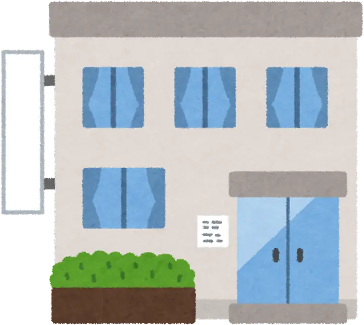
Pintu terbuka. Seorang pria berusia 38 tahun masuk. Jas dokter putih dengan detail batik di kerahnya memberi kesan profesional tapi hangat. Rambutnya rapi, matanya ramah, dan senyumnya menenangkan.
“Selamat sore, Aruna dan Raka. Senang bertemu kalian,” ucapnya sambil menjabat tangan mereka dengan hangat.
Aruna merasa lega. Raka, meski masih hati-hati, bisa merasakan aura berbeda.
Mereka duduk di ruang konsultasi. Tidak ada meja besar yang kaku, hanya sofa empuk dan meja kecil dengan buku-buku tentang nutrisi, psikologi, dan kedokteran.
“Sebelum saya jelaskan apa pun, saya ingin dengar dulu cerita kalian,” kata Dr. Metz. Aruna mulai bercerita, “Belakangan saya merasa cepat menua. Kulit kusam, badan cepat lelah. Itu bikin saya gampang marah, hubungan kami sering tegang.”
Dr. Metz mendengarkan penuh perhatian. Ia tidak menyela, hanya sesekali mengangguk sambil mencatat di tabletnya.
Raka menambahkan, “Saya kira ini cuma soal kosmetik. Tapi kalau memang ada hal lain, saya ingin tahu.”
Setelah mereka selesai, ia berkata dengan lembut, “Terima kasih sudah terbuka. Ini langkah awal yang penting. Banyak hal yang bisa kita benahi.”
Dr. Metz menatap Aruna dengan tenang. “Saya ingin mulai dari wajah. Wajah adalah cermin pertama tubuh kita. Bentuk wajah sering memberi petunjuk tentang pola tubuh dan gaya hidup.”
Ia menunjuk lembut ke arah Aruna. “Aruna, wajahmu bulat lembut, pipi mudah tampak kusam ketika lelah. Itu ciri tipe White Circle. Tipe ini biasanya penyayang, peka, tapi rentan stres. Kalau tidur kurang atau makan sembarangan, kulit langsung bereaksi.”
Raka tersenyum kecut. “Jebakan makan mi instan tengah malam ya, Dok?”
Dr. Metz tertawa kecil. “Tepat sekali. Dengan tipe ini, metabolisme cepat tapi mudah inflamasi. Jadi sekali pola makan salah, tubuh cepat drop.”
Aruna tertegun. “Itu benar sekali, Dok. Kalau saya begadang, muka langsung kusam. Bahkan jerawat kecil sering muncul.”
Dr. Metz tersenyum hangat. “Itu tanda tubuhmu sensitif. Tapi kelebihannya, tipe ini cepat membaik kalau pola hidup diperbaiki.”
Kemudian ia menoleh ke Raka. “Raka, wajahmu tegas dengan rahang kotak. Itu khas Green Square. Tapi bagian atas wajahmu agak oval—ada sisi Red Ovale. Kombinasi ini membuatmu tampak kuat, tahan banting. Namun ada jebakannya.”
Dr. Metz lalu memperhatikan postur mereka. “Aruna, tubuhmu agak berisi tapi lembut. Itu khas White Circle. Rentan pada pencernaan. Kalau stres, perutmu cepat bereaksi.” Aruna mengangguk. “Betul, Dok. Saya sering sakit perut kalau sedang banyak pikiran.”
Lalu ia menatap Raka. “Raka, tubuhmu solid, dada lebar, bahu kokoh. Itu ciri Green Square. Kuat, tapi mudah menyimpan lemak. Kalau makan malam tidak dijaga, perut cepat buncit. Ditambah sisi Red Ovale, kamu mudah mengalami inflamasi.”
Raka menghela napas. “Pantas saja berat badan saya cepat naik walau olahraga.”
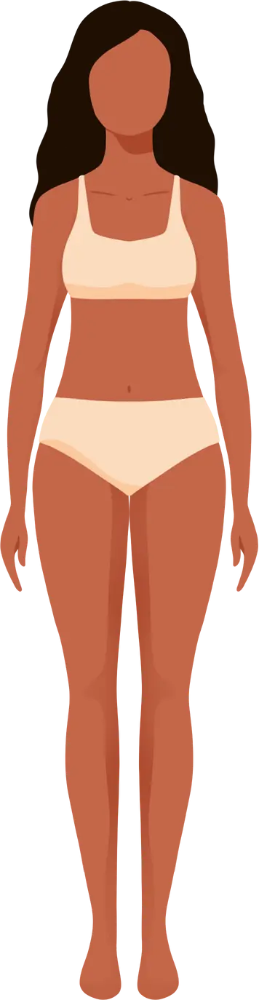
Dr. Metz tersenyum. “Dari wajah dan tubuh, kita sudah mendapat gambaran. Tapi lebih dalam lagi, ada karakter.”
Ia menoleh ke Aruna. “Kamu penyayang, mudah empati, tapi sering menanggung stres sendiri. Karena itu tubuhmu cepat bereaksi. Saat merasa tidak didengar, wajahmu ikut kusam.”
Aruna menunduk, matanya berkaca-kaca. Kemudian ia menatap Raka.
“Kamu pekerja keras, tahan banting. Tapi keras kepala, stresmu sering kamu simpan. Itu membuat tubuhmu kaku dan cepat meradang.”
Raka tertawa kecil. “Dok, rasanya saya dibongkar habis-habisan.”
Dr. Metz menjawab tenang, “Bukan dibongkar, tapi dipahami. Dengan mengenali pola tubuh, kita bisa bekerja sama dengan tubuh, bukan melawannya.”
Aruna: “Jadi semua ini bukan cuma salah saya ya, Dok?”
Dr. Metz: “Tidak ada yang salah, Aruna. Tubuhmu hanya memberi sinyal. Kita hanya perlu belajar membacanya.”
Raka: “Kalau begitu, Dok, kenapa saya bisa kuat kerja sampai malam, tapi setelah itu langsung drop?”
Dr. Metz: “Itu karena tipemu Red Ovale + Green Square. Kamu tahan banting, tapi cepat meradang. Jadi kamu seperti mobil sport: kencang, tapi bensinnya cepat habis.”
Aruna: “Dan saya?”
Dr. Metz: “Kamu seperti taman yang indah, Aruna. Kalau dirawat dengan baik—cukup air, cukup cahaya—tumbuh segar. Tapi kalau stres, taman itu cepat layu.”
Mereka berdua tersenyum. Analogi itu terasa sederhana, tapi mengena.
“Penyembuhan membutuhkan waktu, tetapi juga membutuhkan kesempatan yang diberikan oleh pilihan kita sendiri.”
— Hippocrates
Dr. Metz menyatukan penjelasannya.
“Jadi, bukan umur yang membuat kalian cepat merasa tua. Tapi gaya hidup yang tidak sesuai dengan body type kalian. Aruna butuh tidur dan manajemen stres. Raka butuh mengendalikan gula dan inflamasi. Kalau fondasi ini kuat, slow aging akan berjalan efektif.”
Aruna merasa lega. Raka, yang awalnya skeptis, kini percaya.
Dr. Metz menutup sesi dengan instruksi awal:
“Anggap ini awal perjalanan 12 minggu. Saya akan mendampingi kalian. Tidak ada instan, tapi hasilnya lebih kuat dan bertahan lama.”
Aruna tersenyum lega. Raka menjabat tangan dokter dengan tatapan yakin.
Untuk pertama kali, mereka merasa menemukan benang merah yang menjelaskan keresahan mereka. Bukan sekadar soal wajah, tapi keseluruhan tubuh dan jiwa.
Mari kita bahas keempat tipe utama satu per satu.
Orang dengan tipe Red Ovale biasanya memiliki wajah lonjong, pipi agak menonjol, dan ekspresi yang kuat. Tatapan mereka sering hidup, penuh semangat. Garis wajahnya cenderung tegas namun tetap proporsional.
Tubuh tipe ini umumnya ramping dengan metabolisme cepat. Mereka tampak bugar dari luar, tetapi ada sisi rapuh: mudah mengalami peradangan. Otot mungkin tidak sebesar Green Square, tetapi stamina sering tinggi.
Mereka energik, ambisius, dan penuh ide. Suka tantangan, cepat bergerak, dan tidak betah diam. Namun ada kelemahannya: mudah terbakar stres. Seperti mobil sport yang bisa melaju kencang, tapi bensinnya cepat habis.
Ciri khasnya adalah rahang kotak, struktur wajah tegas, dan tampilan kokoh. Wajah tipe ini sering terlihat “strong,” seakan tidak mudah goyah.
Tubuh Green Square cenderung solid, berotot alami, dengan dada lebar dan bahu kokoh. Mereka terlihat kuat, bahkan tanpa banyak latihan. Namun, mereka mudah menyimpan lemak—terutama di area perut.
Orang Green Square dikenal tahan banting, pekerja keras, dan tidak gampang menyerah. Tapi ada sisi lain: keras kepala, sulit berubah, dan cenderung menyimpan stres dalam diam. Dari luar terlihat baik-baik saja, padahal di dalam sering ada tekanan.
Bagian atas wajah (kening, mata) lebih lebar dibanding bagian bawah. Dagu biasanya lebih kecil. Bentuk wajah ini memberi kesan lincah, ekspresif, dan penuh ide.
Tubuh tipe ini cenderung gesit, dengan berat badan yang bisa cepat naik atau turun. Kadang terlihat ideal, kadang kurus drastis atau naik signifikan hanya dalam waktu singkat.
Mereka kreatif, penuh ide, cepat bereaksi. Suka mencoba hal baru, mudah antusias. Tapi emosinya fluktuatif: bisa sangat bersemangat hari ini, lalu drop kelelahan keesokan harinya.
Wajah bulat, lembut, sering terlihat baby face. Kulitnya cenderung halus, tetapi cepat kusam saat stres atau kurang tidur.
Tubuh tipe ini biasanya berisi dengan jaringan lemak yang mudah bertambah. Pencernaan sering menjadi titik lemah. Mereka sensitif terhadap makanan manis atau berlemak.
Mereka penyayang, penuh empati, mudah dekat dengan orang lain. Namun sering kali mereka menanggung stres sendiri. Karena sensitif, mereka mudah cemas.
Body type dalam Beauty Code mengajarkan bahwa kecantikan dan kesehatan bukan soal melawan usia, tapi soal mengenali pola tubuh kita sendiri.
Dengan memahami body type, setiap orang punya peta jalan pribadi menuju gracefully aging.
| Tipe Tubuh | Red Oval | Green Square | Yellow Rectangle | White Circle |
|---|---|---|---|---|
| Bentuk Wajah | Oval, dengan fitur wajah penuh dan tulang pipi menonjol | Wajah dengan bentuk tulang rahang jelas dan bibir berukuran sedang | Wajah ramping dengan fitur halus, dahi menonjol | Wajah bulat dengan kulit sangat halus dan lembut |
| Ciri Kulit | Sensitif, cenderung berubah menjadi merah | Kulit kuning langsat (olive), mungkin memiliki bekas luka atau parut yang terlihat | Pucat dan jarang merona, sensitif terhadap suhu dan emosi | Lembut, halus, mungkin memiliki masalah dengan retensi air |
| Bentuk Tubuh | Berotot dengan pinggang lurus, mungkin berkelebihan berat badan jika tidak berolahraga | Seimbang, dengan otot yang terdefinisi baik dan postur atletis | Ramping dan kurus dengan bahu sempit | Bulat karena akumulasi toksin, tonus otot yang buruk |
| Karakter | Dinamis, mudah dipengaruhi, sering tidak puas dengan apa yang dimiliki | Visioner, proaktif, memiliki kualitas kepemimpinan | Introvert, menikmati rutinitas, sangat setia dan perhatian | Sangat menghargai kenangan, loyal dan tulus dalam persahabatan |
“Perubahan besar selalu dimulai dari restart kecil.”
— unknown
Centang Power of 3 Action tiap minggu sambil membaca. Progres tersimpan di perangkat ini.
Aruna menatap doktermetz dengan penuh rasa ingin tahu. “Dok, jadi sebenarnya fase Restart ini apa sih? Dan berapa lama kami harus menjalaninya?”
Doktermetz tersenyum. “Restart berlangsung selama empat minggu. Anggap saja ini bulan pertama yang fungsinya menyiapkan tubuh kalian. Ada empat fokus utama: tidur, gula, stres, dan pola makan dasar.”
Raka mengangkat alis. “Empat minggu… jadi tiap minggu ada fokusnya, Dok?”
“Ya, tepat sekali,” jawab doktermetz. “Minggu pertama kita benahi tidur. Kalian belajar tidur lebih awal, matikan gadget sebelum jam sepuluh, dan disiplin membuat ritme tidur-bangun. Di minggu kedua, fokusnya gula—kalian mulai kurangi minuman manis, mie instan tengah malam, camilan tinggi gula. Itu akan terasa berat, bahkan bisa bikin tubuh seperti ‘sakau’, tapi itu normal.”
Aruna mengangguk pelan. “Lalu minggu ketiga?”
“Minggu ketiga kita atur stres. Saya akan ajarkan breathwork, napas 5 detik tarik, 5 detik buang. Praktik pagi dan malam. Latihan ini membantu sistem saraf tenang, tidur lebih nyenyak, dan pikiran lebih fokus. Sedangkan minggu keempat adalah masa konsolidasi. Semua kebiasaan dari minggu 1–3 digabung: tidur lebih baik, gula berkurang, stres lebih terkendali, pola makan lebih sederhana. Ini fondasi agar tubuh siap masuk ke fase Recharge.”
Raka menghela napas panjang. “Kalau begitu, Restart ini memang bukan sekadar coba-coba, ya? Tapi semacam reset total sebelum melangkah ke tahap berikutnya.”
“Betul,” kata doktermetz mantap. “Tanpa Restart, fondasi rapuh. Ingat, kalian sedang menyiapkan tubuh agar bisa awet muda lebih lama. Dan semua dimulai dari hal sederhana yang sering kita abaikan.”
Hari-hari awal terasa seperti perjalanan penuh liku. Malam kedua, Raka tidak tahan dan membuka ponselnya diam-diam. Cahaya biru menyinari wajahnya, membuat Aruna terbangun. “Ka… janji kita mana?” tegurnya pelan. Raka kaget, buru-buru menutup layar, lalu tertawa kaku. “Refleks, Sayang. Kayak ada yang hilang kalau nggak buka berita malam.”
Aruna menatapnya lelah, tapi memilih menahan amarah. Ia tahu perubahan butuh waktu. “Ya sudah, kita coba lagi besok,” ujarnya dengan nada lembut. Raka terdiam, lalu tersenyum tipis. Untuk pertama kalinya, ia merasa istrinya benar-benar menemaninya dalam perjuangan kecil ini. Bukan lagi sekadar instruksi dokter, melainkan janji yang mereka pegang bersama.
Malam berikutnya, giliran Aruna yang tergoda. Ia membuka ponsel hanya untuk melihat media sosial. Foto teman-temannya yang masih glowing membuat dadanya sesak. “Kenapa kulitku nggak secerah mereka?” pikirnya. Ia langsung teringat ucapan dokter: cahaya biru merusak melatonin, mempercepat penuaan kulit. Dengan rasa bersalah, ia mematikan layar dan berbalik memeluk Raka.
Keesokan paginya, Aruna mengaku. “Aku juga sempat buka HP. Rasanya susah banget, Ka.” Raka menatapnya dengan tatapan penuh pengertian. “Berarti kita sama-sama kecanduan,” balasnya sambil terkekeh. Mereka tertawa, meski lelah. Tawa itu sederhana, tapi membawa kehangatan yang sempat hilang. Mereka sadar, melawan kebiasaan lama jauh lebih berat daripada yang terlihat.
Untuk membantu, dokter memberi ide ritual tidur. Aruna menyalakan diffuser lavender, sementara Raka mulai membaca novel ringan. Lampu kamar diganti dengan warna kuning temaram. Awalnya terasa kaku, seolah dipaksa. Tapi perlahan, suasana kamar berubah. Tidak lagi sekadar tempat melepas lelah, melainkan ruang penyembuhan, tempat mereka belajar kembali mendengar tubuh.
Malam-malam berikutnya masih penuh perjuangan. Kadang Aruna terbangun karena mimpi aneh, kadang Raka gelisah memikirkan pekerjaan. Namun, alih-alih mengambil ponsel, mereka mencoba saling menenangkan. “Tarik napas dulu, Sayang,” bisik Aruna sambil mengelus tangan suaminya. Raka pun belajar menepuk punggung Aruna pelan hingga istrinya kembali terlelap
Di penghujung minggu, tanda-tanda kecil mulai tampak. Lingkar mata Aruna tidak sepekat biasanya. Pagi harinya, ia bercermin dan terkejut melihat wajahnya tampak sedikit lebih segar. Raka pun mengaku tidurnya mulai pulas, meski masih sering bangun dini hari. Perubahan itu mereka catat dalam jurnal, seolah sedang menulis surat cinta pada tubuh sendiri.
Suatu malam, ketika mereka berbaring dalam redup lampu, Aruna berbisik, “Aku merasa seperti kembali ke masa awal kita menikah. Rasanya tenang, nggak ada gangguan.” Raka menoleh, tersenyum hangat. “Mungkin tubuh kita memang rindu suasana begini. Kita aja yang terlalu lama cuek.” Kata-kata itu membuat Aruna terdiam, lalu tersenyum dengan mata berkaca-kaca.
Awal minggu kedua, dokter meminta mereka mencatat semua makanan yang dikonsumsi. Raka langsung menunduk saat menulis: mie instan larut malam. Aruna tersenyum miris ketika menyadari betapa seringnya ia menyambar biskuit manis di meja kerja. Catatan sederhana itu membuat mereka sadar, tubuh mereka diam-diam sedang menanggung beban besar.
“Jadi ini ya yang bikin aku makin buncit?” gumam Raka, menatap tulisan mie instan jam 12 malam. Dokter hanya tersenyum, menjelaskan bahwa resistensi insulin adalah salah satu penyebab penuaan dini di Asia Tenggara. Gula berlebih bukan hanya bikin gemuk, tapi juga merusak kolagen kulit dan menambah risiko penyakit kronis.
Hari-hari berikutnya penuh drama kecil. Raka gelisah saat malam datang, ingin merebus mie favoritnya. Aruna menahan keinginan ngemil cokelat setelah stres di kantor. “Cuma sekali nggak apa-apa kan?” goda Raka. Aruna mendengus, “Sekali jadi dua kali, terus nggak berhenti.” Mereka pun berdebat kecil, tapi akhirnya saling mendukung untuk bertahan.
Namun tantangan sesungguhnya muncul di fase 7 hari pertama. Dokter sudah mengingatkan, lepas gula itu seperti sakau narkoba. Tubuh bisa bereaksi dengan keringat dingin, lemas, sakit kepala, bahkan emosi naik turun. Hari ketiga Aruna gemetar di meja kerjanya, hampir tergoda membeli donat. Sementara Raka di malam keempat terbangun dengan keringat dingin, merasa lapar meski sudah makan.
“Ka, aku kayak orang sakit,” keluh Raka. Aruna yang juga lelah hanya mengangguk. “Kita sama-sama lagi detoks. Ini memang berat, tapi normal,” ujarnya lirih. Mereka saling menggenggam tangan, berusaha menahan diri. Justru di masa sulit itu mereka menyadari: gula benar-benar bekerja seperti racun putih, membuat tubuh meronta saat ikatan candunya diputus.
Perlahan, mereka mulai mencari pengganti. Teh manis berganti infused water lemon. Biskuit diganti potongan buah segar. Raka mencoba ngemil kacang almond meski awalnya mengeluh hambar, sedangkan Aruna menikmati yoghurt tanpa gula dengan topping stroberi. Setiap pilihan kecil terasa seperti kemenangan, dan mereka menulis di jurnal: Hari ini tanpa gula tambahan.
Di akhir minggu kedua, hasilnya mulai terasa. Aruna bangun pagi dengan energi lebih stabil, tidak lagi jatuh setelah makan siang. Raka, meski masih rindu mie instan, mulai merasa tubuhnya lebih ringan. “Aku nggak gampang ngantuk kayak biasanya,” akunya. Mereka saling tersenyum, merayakan kemajuan kecil yang berarti besar.
Memasuki minggu ketiga, dokter memperkenalkan hal baru: breathwork dan meditasi ringan. Raka spontan tertawa kecil. “Saya bukan tipe orang yang bisa duduk diam tarik napas dalam-dalam,” ujarnya. Dokter hanya tersenyum, “Coba dulu. Lima menit pagi dan malam. Kalau serius, hasilnya bisa lebih kuat dari obat tidur.”
Hari pertama, mereka duduk di ruang tamu berhadapan. Aruna menutup mata, menarik napas lima detik, lalu menghembuskan perlahan. Raka menirukan dengan malas, matanya masih melirik jam. Namun, setelah beberapa putaran, ada sesuatu yang berubah. Nafasnya terasa lebih panjang, dadanya sedikit lebih ringan. “Hmm… aneh, tapi enak juga,” gumamnya.
Namun memasuki hari ketiga, muncul fase yang tidak mudah. Raka merasa gelisah, keringat dingin muncul saat ia mencoba duduk tenang. “Aku malah tambah pusing,” keluhnya sambil bangkit dari kursi. Dokter sudah mengingatkan, sama seperti gula, stres yang lama dipelihara akan melawan saat coba dilepaskan. Tubuh bisa ‘sakau’ karena kehilangan kebiasaan lama.
Aruna pun mengalami hal serupa. Di malam keempat, ia menangis saat meditasi, bukan karena sakit fisik, tapi karena ingatan masa lalu menyeruak. Bayangan dirinya yang selalu merasa kurang cantik, kurang muda, membuat dadanya sesak. “Kenapa aku nggak bisa tenang, Ka?” isaknya. Raka mendekapnya, menyadari bahwa napas bukan hanya soal tubuh, tapi juga soal luka batin.
Hari-hari berikutnya, mereka belajar melewati fase itu perlahan. Raka yang awalnya ingin menyerah akhirnya menemukan cara: fokus pada suara napas Aruna di depannya. Aruna pun mulai merasa lega setelah setiap tangis, seolah napas panjangnya membawa keluar beban yang selama ini dipendam. Sesi napas yang tadinya terasa berat kini menjadi pelepasan.
Momen emosional datang ketika Aruna, setelah meditasi, menatap Raka dan berbisik, “Aku merasa lebih dekat sama kamu, Ka. Cuma dari napas, rasanya kayak kita seirama lagi.” Raka terdiam, matanya berkaca-kaca. Ia sadar, bukan hanya tubuhnya yang lebih tenang, tapi juga hatinya. Napas yang sama membuat mereka kembali menemukan irama cinta.
Hari-hari berikutnya, stres terasa lebih terkendali. Raka tidak lagi mudah tersulut saat rapat di kantor. Aruna pun lebih sabar menghadapi tekanan pekerjaan. Mereka mulai merasakan bahwa mengatur napas sama dengan mengatur emosi. Dokter menjelaskan, latihan pernapasan lambat mengaktifkan saraf parasimpatetik, menurunkan kortisol, dan meningkatkan fokus.
Di akhir minggu ketiga, perubahan semakin nyata. Aruna tidak lagi cepat marah, Raka merasa tubuhnya lebih segar meski kerjaan tetap padat. Mereka berdua belajar bahwa stres bukan musuh yang harus diusir, tapi sinyal tubuh untuk diajak bicara. Dan salah satu bahasa tubuh paling tua adalah napas.
“Jadi, Dok… minggu ini kami harus ngapain?” tanya Aruna dengan semangat baru. Setelah tiga minggu melewati tantangan tidur, gula, dan stres, ia merasa tubuhnya mulai berubah. Lingkar mata berkurang, energi lebih stabil.
Doktermetz tersenyum. “Bagus, Aruna. Minggu keempat adalah saatnya konsolidasi. Semua kebiasaan yang kalian pelajari—tidur cukup, kurangi gula, atur stres—digabung jadi satu pola hidup baru. Tapi ada satu fokus tambahan minggu ini: kesehatan usus.”
Raka mengernyit. “Usus? Apa hubungannya sama penuaan?”
“Besar sekali,” jelas doktermetz. “Di dalam usus ada triliunan mikroba. Kalau kita beri mereka makanan sehat, mereka menghasilkan asam lemak rantai pendek yang melindungi metabolisme, bahkan menjaga suasana hati. Tapi kalau kita kurang serat dan kebanyakan makanan ultra-proses, mikrobiota kacau. Akibatnya bisa obesitas, diabetes, sampai penyakit jantung.”
Aruna menimpali, “Jadi bukan cuma soal perut buncit, tapi soal seluruhan tubuh, ya?”
“Betul,” jawab doktermetz. “Karena itu, minggu ini tantangannya sederhana tapi kuat: perbanyak serat, tambah makanan fermentasi, dan kurangi makanan ultra-proses. Anggap saja kalian sedang menyehatkan ‘taman dalam tubuh’—mikrobioma usus kalian. Kalau tamannya sehat, seluruh tubuh pun ikut seimbang.”
Malam itu di rumah, Aruna mencoba menambahkan tempe dan sayur lebih banyak dalam masakan. Raka sempat protes karena tak ada camilan keripik kesukaannya, tapi akhirnya ia menikmati yoghurt dingin sebagai pengganti. Perlahan, mereka menyadari: menyehatkan usus bukan berarti menyiksa diri, tapi menemukan pola makan yang lebih ramah tubuh.
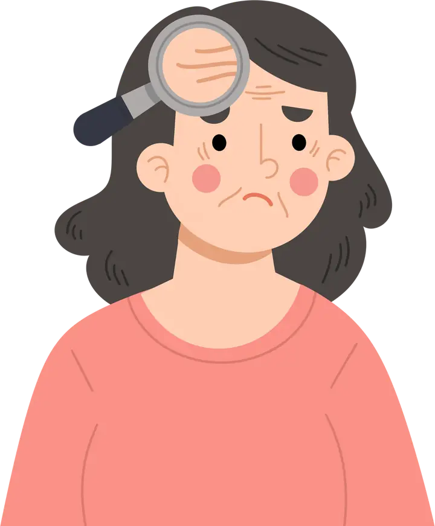
Malam itu, setelah makan malam sederhana dengan tempe dan sayur tumis, Aruna duduk di ruang tamu sambil memandang Raka. “Ka… kamu sadar nggak? Kita sudah sebulan jalanin ini semua.”
Raka terkekeh pelan. “Sadar banget. Aku yang biasanya begadang, sekarang malah bisa tidur sebelum jam sebelas. Dan anehnya, pagi nggak sesakit dulu.”
Aruna mengangguk, matanya berbinar. “Aku juga merasa kulit lebih segar, mood lebih stabil. Padahal waktu awal-awal, aku hampir menyerah gara-gara craving manis.”
Raka menatap istrinya dengan serius. “Aku sempat nyaris putus asa juga, terutama saat stres kerjaan datang. Tapi latihan napas itu… ternyata bikin aku nggak gampang meledak. Rasanya seperti ada tombol ‘reset’ beneran di tubuh kita.”
Mereka berdua terdiam sejenak, menyadari betapa banyak yang berubah dalam empat minggu. Restart bukan hanya soal tidur lebih awal atau makan lebih sehat—melainkan soal belajar kembali mendengarkan tubuh. Dan lebih dari itu, mereka menemukan kembali cara mendukung satu sama lain dalam perjalanan menua bersama.
Suasana ruang konsultasi terasa lebih hangat sore itu. Aruna datang dengan raut wajah lebih segar, sementara Raka tampak lebih bersemangat daripada sebulan sebelumnya. “Dok, jujur… badan kami jauh lebih ringan setelah fase Restart,” kata Aruna sambil tersenyum.
Doktermetz mengangguk puas. “Itulah gunanya Restart. Sekarang tubuh kalian sudah siap melangkah lebih jauh. Fase berikutnya saya sebut Recharge—empat minggu untuk mengisi ulang energi, memperkuat fondasi tubuh, dan menyeimbangkan hormon.”
Raka mencondongkan tubuh. “Recharge… jadi semacam isi ulang baterai ya, Dok?”
“Ya, tepat sekali,” jawab doktermetz. “Kalau Restart itu seperti reset ulang sistem, maka Recharge adalah proses memperkuat mesin tubuh. Kita akan fokus pada tiga hal utama: nutrisi anti-inflamasi, latihan gerak—baik kekuatan maupun kardio, dan stabilisasi hormon. Ketiganya penting agar metabolisme kembali efisien dan tubuh makin tangguh menghadapi penuaan.”
Aruna bertanya lirih, “Berarti tantangannya lebih berat, ya Dok?”
“Bisa dibilang begitu,” kata doktermetz tersenyum. “Tapi kalian sudah punya fondasi. Di fase Recharge ini, tubuh akan belajar memanfaatkan energi dengan lebih cerdas. Bayangkan seperti pohon yang baru saja dipangkas di bulan lalu, kini waktunya tumbuh tunas baru—lebih kuat, lebih sehat.”
Pagi itu, Aruna berdiri di depan cermin dengan pakaian olahraga yang sudah lama tidak tersentuh. “Ka, jujur… aku agak malu. Rasanya aneh sekali mau mulai olahraga lagi setelah sekian lama,” katanya sambil tersenyum canggung.
Raka menepuk bahunya. “Sama. Aku bahkan lupa kapan terakhir kali lari pagi,” ujarnya. Namun kali ini mereka berdua sepakat: minggu kelima akan dijalani dengan penuh komitmen.
Saat sesi konsultasi, doktermetz menjelaskan, “Mulai minggu ini kita masuk fase Recharge. Fokus pertama adalah bergerak. Tubuh butuh minimal 150 menit aktivitas sedang per minggu—jalan cepat, bersepeda, atau berenang—ditambah latihan kekuatan dan keseimbangan. Bukan hanya untuk otot, tapi juga untuk otak. Riset menunjukkan olahraga rutin meningkatkan fungsi berpikir, pembelajaran, bahkan kemampuan mengambil keputusan.”
Aruna mengangguk. “Jadi bukan cuma bikin langsing, tapi juga bikin otak lebih tajam?”
“Betul sekali,” jawab doktermetz. “Olahraga bukan sekadar soal bentuk tubuh, tapi investasi jangka panjang untuk kesehatan jantung, gula darah, dan kualitas tidur. Bayangkan tubuh kalian seperti mesin. Kalau mesin hanya diam, karat menumpuk. Tapi kalau dipakai secara teratur, oli mengalir, roda gigi berfungsi, mesin tetap awet.”
Hari pertama, mereka mencoba jalan cepat keliling kompleks. Nafas Aruna sedikit terengah, sementara Raka bercanda, “Baru sepuluh menit rasanya kayak maraton.” Namun setelah selesai, ada kepuasan tersendiri. Seminggu kemudian, Raka mulai mencoba latihan kekuatan dengan resistance band, sementara Aruna mengikuti kelas yoga online untuk keseimbangan. Perlahan, tubuh mereka mulai mengingat ritme lama: bergerak itu ternyata menyenangkan.
Sore itu, Aruna duduk di ruang konsultasi dengan wajah sedikit lelah. “Dok, jujur saja… sejak olahraga minggu lalu, badan saya memang terasa lebih segar, tapi cepat capek. Apakah karena pola makan saya masih berantakan?” tanyanya sambil melirik Raka.
Raka tertawa kecil. “Kalau aku sih masih suka nyolong gorengan sore-sore. Katanya yang penting olahraga, Dok,” candanya.
Doktermetz menggeleng sambil tersenyum. “Nah, di sinilah banyak orang keliru. Olahraga memang penting, tapi nutrisi adalah bahan bakarnya. Bayangkan tubuh seperti mobil. Kalau tangkinya diisi bensin kotor, meskipun mesinnya baru, performanya tetap terganggu. Minggu ini kita fokus ke nutrisi anti-inflamasi—makanan yang meredakan peradangan, bukan menambah beban.”
Aruna terlihat penasaran. “Makanan apa saja yang bisa membantu, Dok?”
“Pertama, perbanyak sayur dan buah berwarna. Itu ibarat pelindung alami yang menenangkan sel. Kedua, pilih lemak sehat dari ikan laut dalam, alpukat, atau kacang-kacangan. Dan yang paling penting, kurangi makanan ultra-proses—mie instan, snack kemasan, daging olahan—karena mereka pemicu peradangan,” jelas doktermetz sambil menuliskan poin-poin di papan tulis kecil.
Raka mulai menyimak serius. “Kalau minum, gimana Dok? Saya kadang sehari cuma minum dua gelas air. Rasanya nggak haus.”
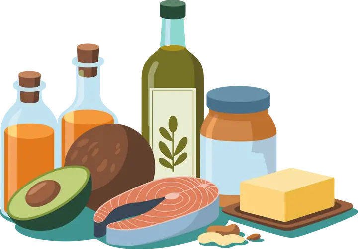
“Itu yang bahaya,” jawab doktermetz tegas. “Haus bukan tanda pertama dehidrasi, tapi tanda terakhir. Kekurangan air membuat otak lambat, kulit kusam, bahkan ginjal bekerja lebih keras. Idealnya, kalian minum 2–2,5 liter air sehari. Tambahkan juga elektrolit alami—kalium dari pisang, magnesium dari sayuran hijau, natrium secukupnya dari garam sehat. Setelah olahraga, tubuh butuh pengganti cairan, bukan hanya air putih tapi juga mineral.”
Aruna mengangguk, teringat beberapa kali ia pusing setelah yoga karena lupa minum. “Jadi hidrasi itu juga bagian dari anti-aging ya, Dok?”
“Betul sekali,” jawab doktermetz. “Hidrasi ibarat oli mesin. Kalau cukup, semua berjalan mulus. Kalau kurang, tubuh cepat ‘panas’ dan rusak dari dalam.”
Malam itu di rumah, Aruna mencoba menyiapkan makan malam dengan pola baru: salmon panggang dengan taburan biji chia, sayur kukus warna-warni, dan yoghurt rendah gula sebagai penutup. Raka sempat meringis karena tak ada gorengan, tapi ia mencoba. “Rasanya beda, tapi ringan ya,” katanya sambil menelan suapan terakhir.
Beberapa hari kemudian, perubahan mulai terasa. Aruna bangun dengan kulit lebih segar dan tidak terlalu kering. Raka, yang biasanya gampang lesu sore hari, justru masih bisa fokus hingga malam. Mereka menyadari: makanan dan minuman ternyata bisa jadi obat yang sunyi, bekerja diam-diam memperbaiki tubuh mereka dari dalam.
Malam itu Aruna menatap kosong ke langit-langit kamar. Hari yang panjang di kantor membuatnya lelah, tapi matanya sulit terpejam. Di sisi lain, Raka juga gelisah. Meski tubuhnya lelah setelah bekerja seharian, pikirannya berputar tak henti. Mereka sama-sama bertanya dalam hati: kenapa hidup terasa begitu kusut, padahal kami sudah berusaha lebih sehat?
Keesokan harinya di ruang konsultasi, doktermetz membuka percakapan dengan kalimat yang menohok. “Tahukah kalian? Banyak benang kusut dalam hidup—lelah, mudah marah, perut buncit, sulit tidur—semuanya berawal dari hormon.”
Aruna mengangkat kepala, terkejut. “Jadi bukan hanya soal makanan atau olahraga?
“Bukan,” jawab doktermetz tenang. “Hormon itu ibarat sutradara di balik layar. Kalau ia seimbang, hidup kalian mengalir. Tapi begitu ia kacau, seluruh naskah kehidupan jadi berantakan. Kortisol dari stres, misalnya, membuat tubuh terus tegang. Insulin yang melonjak karena gula, menyimpan lemak berlebihan. Pada wanita, penurunan estrogen memunculkan keriput dan mood swing. Pada pria, turunnya testosteron membuat otot hilang dan energi merosot.”
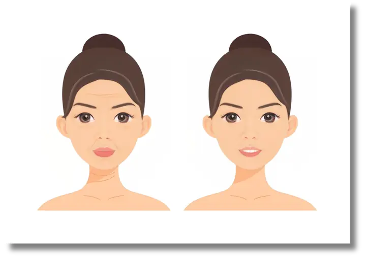
Raka menarik napas panjang. “Jadi selama ini kami berdua sebenarnya dikendalikan hormon yang tidak seimbang?”
“Ya,” sahut doktermetz, “dan di sinilah kita belajar mengurai benang kusut itu. Bukan dengan obat instan, tapi dengan recovery yang penuh kesadaran: tidur cukup, makan yang mendukung hormon, olahraga terukur, dan ritual relaksasi.”
Malam itu, Aruna mencoba langkah kecil: segelas susu hangat sebelum tidur, lalu meditasi napas bersama Raka. Untuk pertama kalinya setelah sekian lama, ia bisa tertidur tanpa dihantui rasa cemas. Raka pun bangun esok paginya dengan energi yang lebih stabil. Mereka mulai percaya, mengurai kusut hidup ternyata bisa dimulai dengan menyentuh lapisan terdalam: hormon itu sendiri.
Malam itu, Aruna menutup laptopnya lebih cepat dari biasanya. Ia teringat pesan doktermetz, “Kalau ingin awet muda, jangan cari krim ajaib dulu. Cari tidur yang dalam.” Raka tersenyum sambil menepuk bahu istrinya. “Kita ini sudah coba gula, olahraga, makan sehat… mungkin sekarang saatnya benar-benar belajar tidur, ya.”
Keesokan harinya di sesi konsultasi, doktermetz menjelaskan dengan penuh penekanan. “Tahukah kalian, tidur adalah obat anti-aging paling murah dan paling manjur. Saat kalian tidur dalam, tubuh memproduksi hormon pertumbuhan yang memperbaiki sel, memperkuat otot, bahkan membuat kulit lebih kencang. Sementara itu, sistem imun melakukan ‘pembersihan malam hari’, menyapu racun dan inflamasi. Tanpa tidur dalam, semua proses ini macet.”
Aruna menatap serius. “Jadi tidur itu bukan sekadar istirahat, tapi terapi alami?”
“Tepat sekali,” jawab doktermetz. “Tidur itu detoks biologis. Otak membersihkan sampah metabolik, hati memproses racun, kulit memperbaiki kolagen. Tidak ada pil atau serum yang bisa menggantikan fase tidur nyenyak.”
Raka menghela napas. “Tapi kadang sulit, Dok. Pikiran nggak bisa diam. Bahkan setelah olahraga pun, otak masih berputar.”
“Itulah tantangannya,” kata doktermetz. “Kalian perlu ritual tidur. Redupkan lampu, jauhi layar, gunakan aroma menenangkan. Latihan napas juga bisa membantu masuk ke gelombang tidur dalam.”
Malam itu, mereka berdua mencoba ritual baru: lampu kamar diredupkan, diffuser lavender dinyalakan, ponsel diletakkan di luar kamar. Aruna membaca buku ringan, sementara Raka melakukan napas 5–5. Hasilnya? Untuk pertama kalinya dalam waktu lama, mereka bangun pagi dengan tubuh lebih segar, mata tidak lagi berat, dan pikiran lebih jernih.
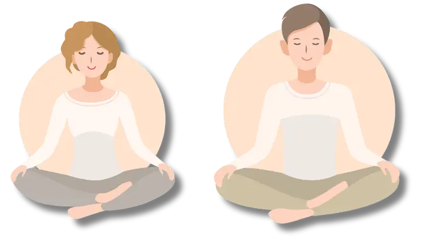
Malam itu, Aruna duduk di balkon sambil menyesap teh herbal hangat. Angin malam berhembus lembut, membawa rasa syukur. “Ka,” katanya pada Raka yang sedang merenggangkan badan setelah latihan ringan, “aku merasa berbeda. Bukan cuma tubuhku yang lebih segar, tapi juga hatiku lebih tenang.”
Raka tersenyum. “Aku juga. Dulu aku pikir olahraga cuma bikin capek. Tapi sekarang, jalan cepat pagi atau latihan band itu malah bikin energi stabil seharian. Tidur kita juga jauh lebih nyenyak.” Ia menatap istrinya sejenak, lalu menambahkan, “Aku merasa kita belajar cara baru untuk hidup, bukan hanya untuk awet muda, tapi untuk menikmati waktu bersama lebih utuh.”
Aruna mengangguk pelan. “Kalau bulan pertama itu rasanya seperti bertahan melewati detoks, bulan kedua ini justru seperti mengisi ulang. Aku lebih percaya diri dengan tubuhku, dan… aku merasa kita jadi lebih dekat.”
Mereka terdiam sejenak, menyadari bahwa fase Recharge telah menanamkan sesuatu yang lebih dalam dari sekadar rutinitas: kebiasaan kecil yang membuat tubuh lebih kuat dan jiwa lebih seimbang.
Aruna berdiri di depan cermin kamar, matanya menatap wajah yang terasa berbeda. Bukan berarti kerutan menghilang sepenuhnya, tapi ada sesuatu yang sulit dijelaskan: cahaya di kulitnya, semangat di matanya. “Ka, kamu sadar nggak? Kita kelihatan lebih… hidup,” ujarnya pelan.
Raka meraih kemejanya yang mulai terasa longgar di bagian perut. Ia terkekeh. “Aku juga merasa begitu. Dulu rasanya setiap bangun pagi itu berat, sekarang justru lebih ringan. Kayak mesin tubuhku sudah di-reset.”
Saat konsultasi berikutnya, doktermetz tersenyum melihat perubahan keduanya. “Selamat, kalian berhasil melewati Restart dan Recharge. Itu seperti membersihkan rumah dan mengisi ulang energi. Kini kita masuk fase terakhir: Rejuvenate. Inilah seni meremajakan diri, bukan hanya di kulit, tapi juga di dalam tubuh dan hati.”
Aruna menatap penuh antusias. “Jadi sekarang saatnya kami menuai hasil?”
“Betul,” jawab doktermetz. “Rejuvenate adalah saat semua fondasi yang sudah kalian bangun bekerja bersama. Puasa untuk merangsang stem cell, nutrisi dan perawatan kulit untuk menyalakan cahaya luar, terapi klinis integratif untuk mendukung sel tetap muda, dan terakhir—koneksi sosial, karena kebahagiaan sejati datang dari hubungan yang hangat.”
Raka menambahkan sambil menepuk tangan Aruna, “Jadi ini bukan sekadar soal awet muda, tapi bagaimana caranya kita benar-benar merayakan hidup?”
“Ya,” kata doktermetz dengan nada mantap. “Karena menua dengan indah adalah seni: seni menjaga dari dalam, merawat yang terlihat di luar, dan membangun makna bersama orang lain. Inilah saatnya kalian memetik buah dari perjalanan panjang ini.”
Pagi itu, Aruna menatap meja makan dengan sedikit ragu. Di hadapannya ada roti panggang yang biasa ia santap setiap pagi. Namun kali ini, jam masih menunjukkan pukul 07.00, sedangkan ia baru boleh makan pukul 08.00. “Ka, rasanya aneh banget, nunggu satu jam lagi hanya untuk sarapan,” keluhnya sambil menatap Raka.
Raka meneguk segelas air putih lalu tersenyum. “Sabar, Run. Dokter bilang ini bagian dari reset. Kita cuma kasih waktu tubuh buat istirahat lebih lama.”
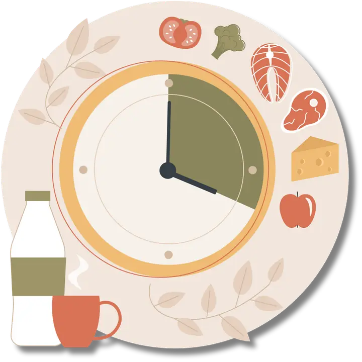
Di ruang konsultasi, doktermetz membuka penjelasan dengan kalimat tegas. “Puasa bukan sekadar ibadah atau tren diet. Puasa adalah tombol reset metabolik. Ketika tubuh tidak mendapat asupan kalori, ia beralih dari mode penyimpanan menjadi mode perbaikan. Hormon pertumbuhan meningkat, lemak mulai dipakai sebagai energi, sel-sel rusak dibersihkan melalui proses autophagy.”
Aruna menatap kagum. “Autophagy itu semacam pembersihan dari dalam, ya Dok?”
“Betul,” jawab doktermetz. “Bayangkan rumah yang lama tak dibersihkan. Puasa memberi kesempatan tubuh untuk menyapu sampah metabolik. Bahkan, beberapa penelitian awal menunjukkan bahwa puasa bisa merangsang stem cell baru, membantu tubuh memperbarui jaringan. Pada hewan, hasilnya sangat jelas, dan pada manusia manfaat metaboliknya sudah terbukti: menurunkan berat badan, memperbaiki gula darah, hingga meningkatkan fokus.”
Raka mengangguk sambil bergumam, “Pantas aku merasa lebih jernih pikirannya kalau nggak langsung sarapan.”
Minggu itu, mereka memulai dengan pola 12 jam: makan terakhir pukul 20.00, sarapan pukul 08.00. Hari-hari pertama terasa berat. Aruna sempat merasa pusing di pagi hari, sementara Raka berkeringat dingin saat menahan lapar di kantor. Namun setelah melewati tiga hari, tubuh mereka mulai beradaptasi. Aruna bahkan berkata, “Aneh ya, justru aku merasa lebih produktif di jam-jam puasa. Fokusku meningkat.”
Malam harinya, mereka merayakan pencapaian kecil itu dengan membuat menu berbuka sehat: sup sayuran hangat, ikan panggang, dan buah segar. Raka tersenyum puas. “Kalau ini namanya lapar yang menyembuhkan.”
Pagi itu, Aruna membuka grup WhatsApp kantornya. Teman-temannya ramai membahas “rahasia glowing skin” yang lagi viral di media sosial. Ada yang membicarakan serum anti-aging hacks, ada yang sibuk share promo collagen drink. Aruna tersenyum miris. “Ka, semua orang kayaknya lagi heboh banget cari cara instan biar glowing.”
Raka menimpali sambil bercermin. “Padahal kita udah belajar, glowing itu bukan sekadar ikutan tren. Kulit kan cerminan apa yang terjadi di dalam tubuh.”
Saat sesi konsultasi, doktermetz menegaskan, “Kalian benar. Sekarang istilah seperti skin barrier dan collagen booster sedang booming. Tapi yang sering terlewat adalah: kulit sehat tidak bisa dibeli dengan satu botol produk. Glow sejati adalah akumulasi dari tidur cukup, hidrasi, nutrisi, dan hanya sebagian kecil ditopang oleh skincare atau perawatan klinis.”
Aruna bertanya, “Jadi minuman kolagen yang sekarang viral itu benar-benar efektif, Dok?”
“Efektif kalau tepat,” jelas doktermetz. “Yang harus dipahami: bukan jumlah kolagen yang penting, tapi bagaimana tubuh bisa menyerapnya. Kolagen terbaik biasanya berbentuk hydrolyzed, micronized, atau dengan teknologi epigenetik, sehingga molekulnya kecil dan bisa menembus usus untuk benar-benar digunakan tubuh. Kalau hanya mengejar dosis besar tanpa teknologi penyerapan, hasilnya bisa nihil. Dan ingat, kolagen tanpa antioksidan ibarat membangun rumah tanpa atap—cepat rusak.”
Raka mengernyit. “Tapi Dok, banyak sekali testimoni di internet yang katanya berhasil.”
Doktermetz tersenyum tipis. “Itu dia jebakannya. Testimoni bukan bukti. Glowing di iklan bisa hasil kamera atau filter. Yang harus jadi pegangan adalah penelitian klinis dan data peer-reviewed, bukan sekadar review viral. Anti-aging sejati butuh strategi yang terbukti, bukan sekadar ikut-ikutan.”
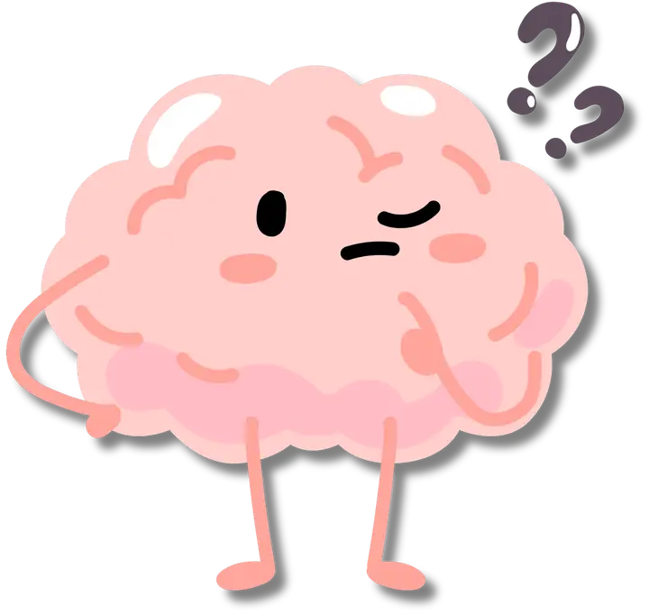
Raka tertawa kecil. “Jadi glowing itu bukan soal siapa yang punya review terbanyak, tapi siapa yang punya data paling jelas?”
“Betul,” jawab doktermetz. “Karena pada akhirnya, kulit sehat dan awet muda datang dari gabungan gaya hidup, nutrisi, perawatan sederhana, plus intervensi klinis yang dipilih dengan bijak, bukan karena FOMO.”
Malam itu, Aruna menutup harinya dengan masker yoghurt alami, segelas infused water lemon, dan tidur lebih awal. Raka mencoba rutinitas baru: membersihkan wajah lalu memakai pelembap ringan—sesuatu yang dulu dianggap hanya untuk wanita. Mereka berdua tersenyum saat bercermin. Glow yang muncul bukan hanya dari kulit, tapi juga dari rasa percaya diri yang tumbuh bersama.
Pagi itu, Aruna sedang menonton video pendek di media sosial. Ada influencer yang menunjukkan hasil wajahnya setelah perawatan “instan anti-aging” dengan filler dan benang tarik. “Ka, lihat ini,” kata Aruna sambil memperlihatkan layar ponselnya ke Raka. “Katanya bisa bikin wajah kencang seketika. Hasilnya kelihatan banget.”
Raka melirik lalu tersenyum miris. “Hmm, cepat sih, tapi aku jadi ingat kata-kata doktermetz: kalau fondasinya rapuh, cat mahal pun nggak akan menutupi retakan dinding.”
Ketika sesi konsultasi tiba, Aruna pun langsung bertanya. “Dok, sebenarnya gimana kita harus menyikapi semua tren anti-aging ini? Mulai dari botox, filler, thread lift, sampai suntik vitamin macam-macam. Rasanya semua orang di sekitar saya sedang melakukannya.”
Doktermetz tersenyum tenang, lalu mencondongkan badan. “Itulah realita dunia anti-aging hari ini: banyak hal yang menjanjikan hasil cepat. Sebagian memang ada tempatnya, bisa membantu bila digunakan tepat. Tapi banyak juga yang sekadar mengikuti tren. Saya ingin kalian ingat: anti-aging sejati tidak boleh berhenti di kulit luar. Kalau fondasi tubuh rapuh, semua yang kalian lakukan hanya sementara.”
Raka mengangguk pelan. “Jadi, kuncinya ada di dalam tubuh?”
“Betul,” jawab doktermetz mantap. “Prinsip saya adalah stem cell activation. Kita merangsang tubuh untuk memperbaiki dirinya sendiri. Caranya bukan hanya lewat satu metode, tapi kombinasi integratif:
Prinsipnya jelas: bangun dulu dari dalam, baru perkuat dari luar.”
Aruna terlihat merenung. “Jadi, semua tren seperti botox, filler, atau benang tarik bisa membantu, tapi sebaiknya bukan jadi fokus utama?”
“Tepat sekali,” jelas doktermetz. “Itu semua adalah alat, tapi bukan fondasi. Sama seperti rumah: cat, dekorasi, dan lampu kristal bisa memperindah tampilan. Tapi kalau fondasi dan dindingnya rapuh, rumah tidak akan bertahan lama. Anti-aging yang hanya kosmetik tidak bisa menggantikan regenerasi sejati dari dalam.”
Raka menyela dengan tawa kecil. “Berarti, Dok, kita ini harus lebih sabar ya. Karena perawatan integratif hasilnya memang bukan besok kelihatan, tapi jangka panjang.”
“Betul,” sahut doktermetz. “Tubuh seperti kebun. Tidak cukup sekali disiram, ia butuh nutrisi, oksigen, cahaya, dan waktu. Hasil yang kalian lihat nanti akan lebih natural, lebih tahan lama, dan—yang terpenting—lebih sehat.”
Malam itu, Aruna menulis di jurnalnya: “Hari ini aku belajar bahwa anti-aging bukan sekadar mengejar kilau instan. Ini tentang memberi tubuh kesempatan untuk meremajakan diri dari dalam. Yang indah memang butuh waktu, tapi hasilnya akan lebih sejati.”
Malam itu, Aruna dan Raka menghadiri reuni kecil bersama sahabat lama. Suasana penuh tawa, cerita masa kuliah, dan kehangatan. Saat pulang, Aruna tersenyum pada Raka. “Aneh ya, Ka… habis kumpul kayak gini, rasanya energi aku nambah. Padahal tadi siang aku capek banget.”
Raka mengangguk. “Iya, aku juga. Kayak ada cahaya lain yang bikin hati lebih enteng.”
Beberapa hari kemudian di sesi konsultasi, doktermetz berkata, “Kalian baru saja mengalami apa yang para ilmuwan sebut ‘social glow’. Hubungan sosial yang hangat bukan hanya membuat hati bahagia, tapi juga memperpanjang umur. Studi di Blue Zones—wilayah di dunia dengan penduduk berusia 100 tahun lebih—menunjukkan satu benang merah: mereka punya ikatan sosial yang kuat.”
Aruna menatap penasaran. “Blue Zones itu apa, Dok?”
“Contohnya di Okinawa, Jepang,” jelas doktermetz. “Orang-orang di sana hidup dalam moai, kelompok sahabat yang saling mendukung seumur hidup. Di Ikaria, Yunani, komunitas saling bertemu setiap sore untuk minum teh herbal bersama. Di Sardinia, keluarga lintas generasi tinggal berdekatan. Semua itu memberi rasa aman, menurunkan stres, dan membuat mereka bahagia. Itulah rahasia umur panjang—mereka tidak pernah merasa sendirian.”
Raka terdiam. “Jadi bukan hanya makanan sehat atau olahraga yang bikin mereka panjang umur, ya?”
“Betul,” kata doktermetz. “Nutrisi, tidur, olahraga penting. Tapi tanpa koneksi sosial, semua itu kosong. Kesepian bisa mempercepat penuaan setara dengan merokok 15 batang sehari. Itulah mengapa social connection adalah pilar terakhir dari perjalanan kita: rejuvenate bukan hanya wajah dan tubuh, tapi juga jiwa dan relasi.”
Malam itu, Aruna menulis di jurnalnya: “Aku ingin menua dengan indah, tapi tidak sendirian. Glow sejati lahir dari hati yang terhubung.”
Malam itu, Aruna dan Raka duduk berdampingan di balkon rumah. Langit dihiasi bintang, dan angin malam berhembus lembut. Mereka saling terdiam sejenak, lalu Aruna berkata, “Ka, ingat nggak bagaimana kita memulai perjalanan ini? Aku insecure dengan kerutan, kamu dengan perut buncit. Rasanya waktu itu seperti dinding pemisah di antara kita.”
Raka tersenyum kecil. “Iya… bahkan kita sering bertengkar karena saling mengkritik. Tapi lihat kita sekarang. Bukan hanya tubuh yang berubah, tapi hubungan kita juga. Aku merasa lebih hidup, lebih dekat sama kamu.”
Aruna mengangguk dengan mata berkaca-kaca. “Aku juga. Ternyata awet muda bukan soal menghapus keriput, tapi bagaimana kita belajar menerima, merawat, dan tumbuh bersama.”
Saat sesi terakhir, doktermetz menutup dengan pesan mendalam. “Selamat, kalian telah melalui 12 minggu penuh tantangan. Kalian sudah reset, recharge, dan akhirnya rejuvenate. Ingat, ini bukan garis akhir, tapi awal dari cara hidup baru. Anti-aging sejati bukan sekadar tampilan, melainkan kualitas hidup: tidur yang nyenyak, tubuh yang bertenaga, kulit yang sehat, hati yang tenang, dan hubungan yang hangat. Itulah seni menua dengan indah.”
Aruna menggenggam tangan Raka erat. Mereka menatap satu sama lain, sadar bahwa perjalanan ini telah mengubah mereka. Bukan hanya tampak lebih segar di luar, tapi juga lebih utuh di dalam.
Tidak ada yang lebih pasti dalam hidup selain waktu yang terus berjalan. Rambut perlahan memutih, kulit mulai berkerut, dan tenaga tidak lagi sama. Semua ini tanda alami bahwa kita menua. Sayangnya, banyak orang menganggap penuaan sebagai musuh. Industri global menempelkan label “anti-aging” pada ribuan produk dan prosedur, seakan-akan menua adalah penyakit yang harus diperangi.
Kata “anti” memberi kesan seolah-olah kita bisa melawan hukum alam. Padahal kenyataannya, penuaan tidak pernah bisa dihentikan. Yang bisa kita lakukan hanyalah memperlambat kerusakan, menjaga tubuh tetap sehat, dan merawat jiwa agar tetap hidup penuh makna. Anti-aging dalam arti harfiah adalah ilusi. Apa yang lebih bijak adalah belajar gracefully aging—menjalani penuaan dengan anggun, sehat, dan penuh penerimaan.
Gracefully aging bukan berarti pasrah. Justru sebaliknya: kita merawat tubuh bukan karena takut menua, tapi karena mencintai kehidupan. Tidur yang cukup, makanan alami, olahraga teratur, puasa metabolik, perawatan kulit berbasis bukti, hingga terapi integratif adalah bentuk kasih sayang pada diri sendiri. Tujuannya bukan sekadar terlihat muda, melainkan menjaga kualitas hidup agar tetap sehat, bugar, dan bermakna di usia berapa pun.
Sains pun mendukung hal ini. Fokus penelitian kini bukan lagi sekadar memperpanjang lifespan, tetapi healthspan. Kita tidak hanya ingin hidup lebih lama, tetapi juga lebih sehat lebih lama. Studi Blue Zones—daerah dengan penduduk berusia 100 tahun lebih—menunjukkan pola sederhana: mereka makan alami, banyak bergerak, tidur cukup, dan memiliki komunitas yang hangat. Rahasia panjang umur bukan pada pil ajaib, tapi pada kebiasaan konsisten dan koneksi sosial yang mendalam.
Lebih jauh, penuaan sejati juga mencakup dimensi manusiawi. Apa gunanya wajah tanpa keriput jika hati hampa? Apa artinya tubuh langsing jika hidup penuh kesepian? Penelitian bahkan menunjukkan bahwa kesepian bisa mempersingkat usia setara dengan merokok 15 batang sehari. Sebaliknya, kehangatan keluarga, rasa dicintai, dan komunitas memberi “glow” yang tidak bisa digantikan oleh kosmetik apa pun. Inilah bagian dari gracefully aging yang sering terlupakan: hubungan manusia adalah nutrisi emosional.
“Penuaan bukan akhir, melainkan cara baru merayakan hidup.”
— unknown
Bagi Aruna dan Raka, perjalanan 12 minggu ini menjadi cermin dari semua pelajaran itu. Mereka memulainya dengan keresahan—Aruna gelisah pada kerutan wajah, Raka minder dengan perut buncit. Kritik kecil kerap berujung pertengkaran, menciptakan jarak di antara mereka. Namun seiring menjalani Gracefully Aging OS, keduanya belajar bahwa masalah bukan sekadar fisik, melainkan cara mereka melihat diri dan satu sama lain.
Minggu demi minggu membawa perubahan. Tidur teratur memberi energi baru. Mengurangi gula membuat mereka lebih ringan. Latihan pernapasan menurunkan ketegangan. Olahraga memperbaiki mood. Nutrisi anti-inflamasi membuat kulit Aruna lebih cerah, sementara puasa memberi Raka vitalitas yang lama hilang. Hingga akhirnya, terapi integratif dan kebiasaan membangun relasi membuat mereka merasa benar-benar “rejuvenate”—tidak hanya di tubuh, tapi juga di hati.
Suatu malam, setelah semua fase selesai, mereka duduk di teras rumah. Aruna menggenggam tangan Raka. “Ka, ternyata menua itu nggak menakutkan kalau kita hadapi bersama. Keriput di wajahku nggak lagi bikin aku minder. Justru aku bersyukur, karena keriput itu lahir dari semua tawa dan air mata yang kita lewati.”
Raka menatap istrinya penuh cinta. “Iya, Sayang. Aku pun tidak takut lagi dengan perutku atau usia yang bertambah. Aku bangga kita bisa menua bareng, dengan cara yang sehat dan penuh cinta.”
Mereka berpelukan erat. Tidak ada lagi rasa takut, tidak ada lagi lomba melawan waktu. Yang ada hanyalah penerimaan—bahwa setiap garis di wajah, setiap uban, setiap perubahan tubuh adalah bagian dari cerita hidup yang layak dirayakan.
Kini, giliran Anda yang membaca buku ini. Anda tidak bisa menghentikan waktu, tapi Anda bisa memilih bagaimana berjalan bersamanya. Apakah dengan ketakutan, terjebak dalam ilusi anti-aging? Atau dengan penerimaan, perawatan bijak, dan kehidupan yang penuh makna?
Gracefully aging adalah pilihan untuk merayakan setiap tahap hidup dengan sehat, bugar, penuh cinta, dan bermakna. Karena sejatinya, awet muda bukan soal angka, melainkan tentang energi, cinta, dan makna yang kita bawa setiap hari.
Gracefully aging bukan tentang melawan usia, tetapi tentang merayakan kehidupan di setiap tahapnya.
Segala sesuatu selalu berawal dari sebuah rasa ingin tahu. Bertahun-tahun saya bergelut di dunia kecantikan dan anti-aging, satu hal yang selalu menghantui adalah pertanyaan: “Mengapa perawatan yang sama bisa memberi hasil berbeda pada setiap orang?”
Jawaban dari pertanyaan itu mulai saya temukan saat berjumpa dengan sebuah buku berjudul “The Cure Anti-Aging” karya dr. Manon Pillow, seorang dokter integratif anti-aging dari Kanada. Buku itu bukan sekadar catatan medis, melainkan rangkuman perjalanan seorang dokter yang selama 20 tahun menganalisa lebih dari 10.000 pasien. Dari sanalah saya belajar bahwa penuaan bukan musuh yang harus dilawan, tetapi sebuah pola yang bisa dipahami—pola yang unik pada tiap manusia.
Terinspirasi dari karya itu, saya memulai sebuah pencarian. Empat tahun terakhir, bersama tim saya, kami menganalisa lebih dari 1.500 individu dengan metode yang lintas disiplin:
Semua temuan itu tidak kami biarkan tercecer. Dengan bantuan Artificial Intelligence (AI), data yang begitu besar disusun, dipelajari ulang, dan dipetakan menjadi sebuah sistem baru. Lahirlah Beautycode.
Sebuah metode yang bukan hanya melihat kulit di permukaan, tetapi membaca Skin Blueprint—peta bawaan yang sudah melekat sejak lahir. Blueprint ini menyingkap kekuatan alami, kelemahan yang perlu diwaspadai, serta jalur terbaik untuk menjaga tubuh, kulit, dan jiwa tetap selaras.
Beautycode juga menjadi jembatan antara kedokteran Barat yang bicara tentang homeostasis dan hormon, dengan kearifan Timur yang menekankan keseimbangan Yin-Yang, Ayurveda, dan Sasang typology. Dari sanalah lahir filosofi Holobeauty: kecantikan yang tumbuh dari keseimbangan tubuh, pikiran, dan jiwa.
Inilah awal perjalanan kita. Sebuah perjalanan untuk menyingkap “kode” yang selama ini tersembunyi di dalam diri, agar kita tak hanya sekadar merawat penampilan, tetapi juga belajar menua dengan anggun—gracefully aging.
Lengkapi program 12 minggu dengan dua bonus ini. Simpan di HP supaya mudah dibuka lagi.
Pendalaman pilar pertama: tidur. Pas dibaca bareng Bab 1, Minggu 1, dan Minggu 8.
Kenali body type-mu (Red Oval, Green Square, Yellow Triangle, White Circle) untuk melengkapi Bab 4.
Link membuka Google Drive / Canva di tab baru. Kalau diminta login, pilih "Buka di browser" atau download PDF-nya.
Semua pintu masuk Aging Gracefully by dr. Metz — dari yang gratis sampai pendampingan.
Dr. Muhammad Rahmatullah, M.Biomed, AAM, FINEM – dikenal luas dengan nama doktermetz – adalah seorang dokter, entrepreneur, sekaligus visioner di bidang anti-aging, functional medicine, dan integrative aesthetic.
Perjalanan akademiknya berawal dari Fakultas Kedokteran Universitas Jenderal Ahmad Yani, lalu berlanjut dengan Magister Biomedik dan Anti-Aging Medicine. Ia memperkaya kompetensinya melalui Functional Medicine (FINEM) di India serta Integrative Anti-Aging di Kanada, menjadikannya salah satu praktisi dengan pendekatan menyeluruh dan global.
Doktermetz adalah pendiri DrMetz Reverse Aging Clinic di Sukabumi dan Jakarta, klinik yang memadukan ilmu kedokteran Barat dan Timur untuk menghadirkan solusi anti-aging, slimming, dan restorative medicine. Inovasi khas yang ia kembangkan mencakup Stemcell Puncture, Quantum Slimming, GlowLift Rejuvenation, hingga BeautyCode – sebuah platform analisis kulit berbasis astrology, anti-aging, dan AI, yang menjadi terobosan unik dalam dunia kecantikan integratif.
Selain berpraktik, doktermetz juga aktif membangun Skinxprenuer, ekosistem edukasi dan pendampingan digital untuk pemilik klinik kecantikan, dengan misi membantu klinik mencapai 100 juta pertama berbasis data dan AI.
Sebagai penulis, ia telah menghasilkan sejumlah karya penting, mulai dari The Aesthetic Whitebook (SOP Klinik Kecantikan), The Red Book (Formula Iklan Kilat Klinik), Acnepedia Series (Acne Formula & Acne Formulation), hingga Habiskan Jatah Gagalmu di Usia Muda. Buku-buku ini bukan sekadar teori, tetapi lahir dari pengalaman nyata membangun klinik, bisnis, dan komunitas.
Dengan visi “Aging Beautifully, Look Naturally”, doktermetz terus menginspirasi banyak orang untuk menemukan kesehatan, energi, dan kecantikan sejati dari dalam.
Untuk kolaborasi, konsultasi, atau langsung terhubung dengan doktermetz, Silakan hubungi via WhatsApp di 0813 8941 4292.